<style>
    /* 基础样式：沉浸式阅读体验 */
    body { 
        font-family: "PingFang SC", "Microsoft YaHei", -apple-system, BlinkMacSystemFont, "Segoe UI", Roboto, "Helvetica Neue", Arial, sans-serif; 
        line-height: 1.8; 
        color: #333;
        max-width: 800px; 
        margin: 0 auto; 
        padding: 40px 20px; 
        background-color: #fff;
    }

    /* 章节单元 */
    .chapter-unit { margin-bottom: 60px; }

    /* 标题体系 */
    h1 { font-size: 2.5em; color: #2c3e50; border-bottom: 3px solid #e74c3c; padding-bottom: 15px; margin-top: 0; margin-bottom: 30px; }
    .subtitle { font-size: 1.5em; color: #7f8c8d; font-weight: 300; margin-top: -20px; margin-bottom: 40px; display: block; }
    
    h2 { font-size: 1.8em; color: #c0392b; margin-top: 50px; border-left: 5px solid #c0392b; padding-left: 15px; }
    h3 { font-size: 1.4em; color: #2980b9; margin-top: 35px; font-weight: 600; }
    h4 { font-size: 1.1em; color: #16a085; margin-top: 25px; text-transform: uppercase; letter-spacing: 1px; }

    /* 正文 */
    p { margin-bottom: 1.5em; text-align: justify; font-size: 1.05em; }
    strong { color: #2c3e50; font-weight: 700; }

    /* 特殊区域 */
    .sidebar { background: #f7f9fb; padding: 25px; border-left: 5px solid #3498db; margin: 30px 0; border-radius: 4px; }
    .sidebar h3, .sidebar h4 { margin-top: 0; color: #3498db; }
    
    .learning-objectives { background: #fff0f0; padding: 25px; border: 1px solid #ffcccc; border-radius: 8px; margin-bottom: 40px; }
    .learning-objectives h3 { color: #c0392b; margin-top: 0; }
    .learning-objectives ul { padding-left: 20px; list-style-type: disc; }
    .learning-objectives li { margin-bottom: 0.5em; }

    .concept-check { background: #e8f8f5; padding: 20px; border-left: 5px solid #1abc9c; margin: 30px 0; }
    .concept-check h4 { color: #16a085; margin-top: 0; display: flex; align-items: center; }
    .concept-check h4::before { content: "✓"; margin-right: 10px; font-size: 1.5em; }

    .exercises { background: #fffcf0; padding: 30px; margin: 50px 0; border: 1px solid #f0e6d2; border-radius: 8px; }
    .question-list { padding-left: 25px; }
    .question-list li { margin-bottom: 15px; }

    /* 表格 */
    table { width: 100%; border-collapse: collapse; margin: 30px 0; font-size: 0.9em; }
    th, td { border: 1px solid #ddd; padding: 12px; text-align: left; }
    th { background-color: #f2f2f2; font-weight: bold; color: #2c3e50; }
    tr:nth-child(even) { background-color: #f9f9f9; }

    /* 图片占位符 */
    .image-placeholder { 
        background: #f8f9fa; border: 1px solid #dee2e6; 
        display: flex; align-items: center; justify-content: center;
        margin: 30px auto 15px auto; 
        color: #6c757d; font-family: monospace; font-size: 0.9em;
        position: relative;
    }
    .image-placeholder::before { content: "🖼️ Image " attr(id); position: absolute; top: 50%; left: 50%; transform: translate(-50%, -50%); }
    .caption { font-size: 0.9em; color: #666; text-align: center; margin-bottom: 40px; line-height: 1.5; padding: 0 20px; }
    .caption strong { color: #c0392b; }

    /* 链接与引用 */
    a.xref { color: #3498db; text-decoration: none; border-bottom: 1px dotted #3498db; }
</style>
<article class="chapter-unit">
<!-- Page 1 & 2 -->
<h1>第2章 星系</h1>
<span class="subtitle">宇宙的基本成分</span>
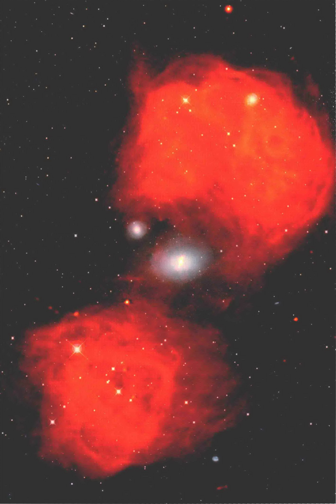
<section class="learning-objectives">
<h3>学习目标</h3>
<p>本章的学习将使你能够：</p>
<ul>
<li>列出普通星系的基本性质。</li>
<li>概述让天文学家将宇宙的疆域扩展超出银河系的距离测量技术。</li>
<li>描述星系如何聚集成群和成团。</li>
<li>陈述哈勃定律，解释如何使用它探测可观测的宇宙中最遥远的天体。</li>
<li>描述活动星系和正常星系之间的基本差异。</li>
<li>描述活动星系的一些重要特点。</li>
<li>解释是什么驱动了中央引擎并给所有的活动星系提供能源。</li>
</ul>
</section>
<p>由于我们的视野扩展到真正的宇宙尺度，我们的研究重点显著转移了。行星变得无关紧要，恒星仅仅只是消耗氢的小亮点。现在整个星系成为构建宇宙的“原子”——仅仅只是一个世纪前，科学家们对这个遥远的领域还一无所知。</p>
<p>我们知道，确实有数以百万计的星系在我们自己的银河系之外。它们全部是巨大的系统，由引力把恒星、气体、尘埃、暗物质和辐射等束缚在一起，到我们的距离几乎是不可思议的遥远。大多数星系比银河系小，有一些大小差不多，有少数要大很多。许多看起来“正常”，就像我们自己的银河系——包含数以千亿计的恒星。也有一些星系里面正在发生着爆炸性的事件，强度远远超过以往在银河系中见过的任何事件。这种“活动”星系可能是由超大质量黑洞驱动的。</p>
<aside class="sidebar">
<h4>知识全景</h4>
<p>今晚我们收集的光线，是从最遥远的星系在地球形成之前很久就发出来的。在宇宙的黑暗中跋涉了几十亿年，这些辐射中很微小的一部分终于被我们的望远镜和探测器捕获，并变成本书中的许多图像。这些辐射不仅告诉我们遥远星系的性质，也告诉我们关于我们生活的银河系乃至整个宇宙的历史的一些信息。</p>
</aside>
<div class="caption">
<strong>左图：</strong>活动星系，比如这个编号为NGC1316的星系，比我们银河系这样的正常星系“精力充沛”得多。这是一个双重影像，混合了可见光照片（由哈勃太空望远镜在地球轨道上拍摄）和射电照片（由甚大阵在新墨西哥州拍摄）。中间（白色）是一个巨大的、可见的椭圆星系，延伸约10万光年，并可能吞噬其北方的邻居。这个活动星系的结果是产生复杂的射电辐射（橙色），于是它被称为天炉座A，从头到尾跨度超过100万光年。[美国国家射电天文台（NRAO）/空间望远镜科学研究所（STScI）]
    </div>
<!-- Page 3 -->
<h2>2.1 星系的哈勃分类</h2>
<p>图2.1显示了一个广袤无垠的空间，距离地球约1亿pc。几乎图中每个光斑或光点都是一个单独的星系——仅在这一张照片中就可以看到数百个。多年来，天文学家已经积累了数百万个星系的类似图像。而我们最初开始研究这些数量巨大的天体时，只是简单地考察它们在天空中的外观。</p>
<p>即使通过小型望远镜，星系的样子看起来也跟恒星有显著区别。它们有模糊的边缘，而且很多都是在一定程度上被拉长的——与恒星通常的锐利、点状的图像一点也不像。虽然从照片中很难分辨，但图2.1中的一些光斑的确是旋涡星系，例如银河系和仙女星系，而其他的光斑很明显不是旋涡星系——看不到星系盘或旋臂。即使当我们考虑它们在空间中的不同方向时，星系看起来也还是不一样的。</p>
<p>美国天文学家埃德温·哈勃是第一个综合考虑并对星系分类的人。1924年，在加利福尼亚州的威尔逊山上，他与刚刚落成的2.5m光学望远镜一起工作，将他看到的星系分为四个基本类型——旋涡星系、棒旋星系、椭圆星系和不规则星系——仅仅基于它们的外观。多年来，许多修改和完善已经被纳入进来，但基本的哈勃分类法在今天仍然被广泛应用。</p>
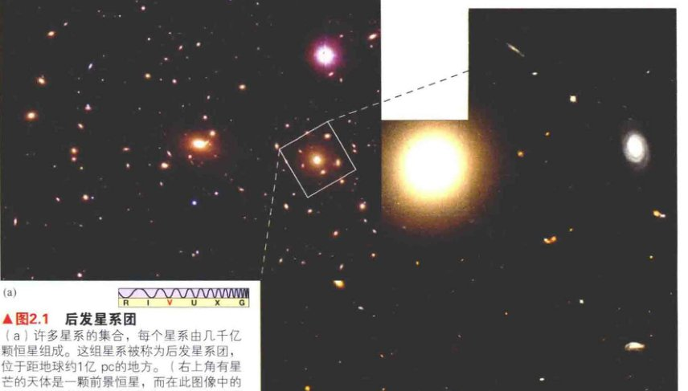
<div class="caption">
<strong>图2.1 后发星系团</strong><br/>
        (a) 许多星系的集合，每个星系由几千亿颗恒星组成。这组星系被称为后发星系团，位于距地球约1亿pc的地方。（右上角有星芒的天体是一颗前景恒星，而在此图像中的其他所有天体几乎都是星系。）<br/>
        (b) 最近由哈勃太空望远镜拍摄的该星系团的一部分。[美国大学天文联盟 (AURA)、美国国家航空航天局 (NASA)]
    </div>
<h3>旋涡星系</h3>
<p>我们在第1章中看到了几个<strong>旋涡星系</strong>的例子——例如，我们自己的银河系和我们的邻居仙女星系。<a class="xref" href="#">∞ (1.1节)</a> 所有这种类型的星系都包含一个扁平的星系盘，在盘上有旋臂，位于星系中央的核球有致密的核心，周围围绕着一个扩展的晕，晕中主要是较暗的年老的恒星。<a class="xref" href="#">∞ (1.1节)</a> 星系核位于核球的中心，恒星密度（即每单位体积的恒星数量）最大。然而，在这个总体“特征”之外，旋涡星系表现出各种各样的形状，如图2.2所示。</p>
<p>哈勃的体系中，旋涡星系由大写字母S表示，并根据核球的大小用小写字母a、b、c分为三个次型。Sa型的星系有最大的核球，Sc型的核球最小。旋涡星系旋臂缠绕的松紧度和核球的大小非常相关（虽然并不是完美的对应）。Sa型旋涡星系往往有缠绕得比较紧密的几乎是圆形的旋臂；Sb型（原文是Sa型，有误——译者注）的星系通常有更松散的旋臂；而Sc型的旋涡星系的旋臂往往很松散，旋涡结构也不太清晰。旋臂也倾向于变得更“复杂”或更“成团”，旋涡图案在外观上也变得越来越松散。</p>
<!-- Page 4 -->

<div class="caption">
<strong>图2.2 旋涡星系的形状</strong><br/>
        旋涡星系的不同形状。从Sa型、Sb型到Sc型，其核球变得越来越小，旋臂也会倾向于越来越松散。[R. 根德勒 (R.Gendler)、美国国家射电天文台 (NOAO)、D. 马林 (D. Malin) / 英澳望远镜 (AAT)]
    </div>
<p>旋涡星系的核球和晕含有大量淡红色的老年恒星和球状星团，类似于在我们自己的银河系和仙女星系中观测到的。而旋臂发出的大多数光，来自银盘中从A型到G型的恒星，使这些星系整体发出白色光芒。我们也假设有厚的星系盘存在，但是它们太暗了，使这个假设很难被证实——银河系中的厚盘发出的光仅占我们银河系总光量的1%左右。<a class="xref" href="#">∞ (1.3节)</a></p>
<p>类似银河系盘面，典型的旋涡星系的扁平盘面常含气体和尘埃。Sc型的星系含有的星际物质最多，Sa型的星系则含有得最少。旋臂发出的21厘米射电辐射揭示了气体的存在、遮光的尘埃带在许多系统中都清晰可见 [见图2.2(b)和图2.2(c)]。恒星在旋臂中形成、旋臂中包含众多的发射星云和新形成的O型和B型恒星。<a class="xref" href="#">∞ (1.5节)</a> 旋臂显得偏蓝，是因为明亮的蓝色O型星和B型星的存在。图2.2(c)是Sc型星系NGC2997的照片，特别清晰地揭示了星际气体、尘埃和年轻的蓝色恒星与旋臂相伴的情景。然而，旋臂并不是年轻星系所必需的：像我们自己的银河系一样，它们含有足够丰富的星际气体，使得恒星可以持续诞生。</p>
<p>大多数旋涡星系并不是正对着我们的——如同图2.2中所示的那样。许多是倾斜的甚至完全侧对着我们的，使得它们的旋涡结构很难被探测到。但我们并不需要看到旋臂才能将其归入旋涡星系。星系盘的存在，以及它的气体、尘埃和新生的恒星，就足够确认旋涡星系了。例如，图2.3所示的星系被列入旋涡星系，因为它的盘面中央有黑暗的尘埃带形成了清晰的线条。（顺便说一句，这个相对较近的星系是另一个在第1章中讨论的沙普利-柯蒂斯的辩论中占重要地位的星系。<a class="xref" href="#">∞ (1.2节)</a> 可见的尘埃带被柯蒂斯解释为暗弱的物质环，并使得他认为我们的银道面可能包含类似的结构。）</p>
<h3>棒旋星系</h3>
<p>在哈勃分类法中，旋涡星系的一种变体被称作<strong>棒旋星系</strong>。棒旋星系与普通旋涡星系的主要不同之处在于，一根细长的、主要由恒星和星际物质组成的，穿过核球的中央并向两端延伸到星系盘中的棒状结构的存在。旋臂从棒状结构的两端附近开始，而不是从核球开始（普通旋涡星系的旋臂就是从核球开始的）。棒旋星系用大写字母SB表示，并像普通的旋涡星系一样，也细分成SBa型、SBb型和SBc型，具体取决于核球的大小。同样，类似普通旋涡星系，旋臂缠绕的松紧程度和核球的大小相关。图2.4显示了棒旋星系的变化。在SBc型中，往往很难分辨哪里是棒状结束和旋臂开始的地方。</p>
<!-- Page 5 -->
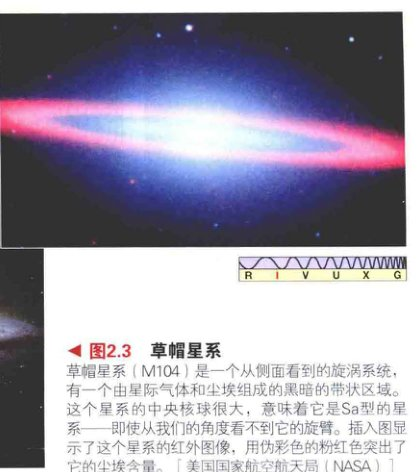
<div class="caption">
<strong>图2.3 草帽星系</strong><br/>
        草帽星系 (M104) 是一个从侧面看到的旋涡系统，有一个由星际气体和尘埃组成的黑暗的带状区域。这个星系的中央核球很大，意味着它是Sa型的星系——即使从我们的角度看不到它的旋臂。插入图显示了这个星系的红外图像，用伪彩色的粉红色突出了它的尘埃含量。[美国国家航空航天局 (NASA)]
    </div>
<p>通常情况下，天文学家无法区别旋涡星系和棒旋星系，特别是当一个星系的盘面恰好侧对地球的时候，如图2.3所示。因为旋涡星系和棒旋星系在物理和化学方面的相似性，一些研究人员甚至懒得去区分它们。然而，其他人认为，它们结构上的差异非常重要，认为这些差异表明了这两种类型的星系在形成和演化方式上“有根本的”不同。</p>
<p>根据现有的证据，银河系看起来是一个棒旋星系，且可能是SBb型的。<a class="xref" href="#">∞ (1.3节)</a></p>
<h3>椭圆星系</h3>
<p>与旋涡星系不同，<strong>椭圆星系</strong>没有旋臂，在大多数情况下，没有明显的星系盘——事实上，除拥有一个致密的中心核外，它们基本上没有表现出任何一点内部结构。如同旋涡星系，恒星的密度在中央星系核附近急剧增加。椭圆星系用字母E表示，并根据它们呈现在天空中的椭圆情况分为若干次型：最圆的为E0型，稍扁平的为E1型，以此类推，最细长的椭圆星系类型为E7（见图2.5）。</p>

<div class="caption">
<strong>图2.4 棒旋星系的形状</strong><br/>
        棒旋星系形状的变化，从SBa型到SBc型，类似图2.2中的旋涡星系的情形，不同之处在于棒旋星系的旋臂是从穿过星系中心的棒状结构的两端开始的。在图(c)中，明亮的恒星是我们银河系中的前景星，中上部的天体是另一个星系，可能与NGC 6872有相互作用。[美国国家航空航天局 (NASA)、D. 马林 (D. Malin) / 澳大利亚望远镜 (AAT)、欧洲南方天文台 (ESO)]
    </div>
<!-- Page 6 -->
<p>需要注意的是，一个椭圆星系的哈勃类型取决于其内在的三维形状和相对视线的方向。从后面看一个球形的星系或一个雪茄形的星系，和从正面看一个盘状星系，看起来都是圆形的，都可以归类为E0型。因此，只通过看起来的外观很难“破译”一个星系的真实形状。</p>
<p>椭圆星系的大小和包含的恒星数量有一个很大的范围。最大的椭圆星系比我们的银河系要大很多。这些<strong>巨椭圆星系</strong>的直径可以达到数十万秒差距，并包含万亿颗恒星。在另一个极端，<strong>矮椭圆星系</strong>的直径可能小到1kpc，包含的恒星数少于100万颗。它们的许多差异暗示天文学家，巨椭圆星系和矮椭圆星系代表着不同的星系类型，具有相当不同的形成历史和恒星成分。矮椭圆星系是迄今为止最常见的椭圆星系类型，数量上是较明亮的椭圆星系的10倍。然而，大多数以椭圆星系形式存在的质量包含在更大的系统中。</p>
<p>旋臂的缺席并不是旋涡星系和椭圆星系之间的唯一区别。大多数椭圆星系中冷的气体和尘埃的含量很少甚至没有。除了少数例外，氢的21厘米射电辐射完全不存在，并且看不到遮光的尘埃带。在大多数情况下，没有证据显示那里有年轻恒星或正在形成恒星。就像我们自己银河系的银晕中的情形，椭圆星系中的恒星大多数都是年老、偏红、小质量的。此外，仍然像我们自己银河系的银晕，椭圆星系中的恒星轨道是无序的，表现出很少的甚至根本没有整体旋转，天体向各个方向移动，而不是像我们银河系那样做规则的圆周运动。椭圆星系与我们银河系的银晕至少有一个很重要的不同：X射线观测揭示了大量非常热（几百万开尔文）的星际气体分布在其内部，并经常延伸到远远超出星系的可见光部分的地方 [见图2.5(a)、(b)]。</p>
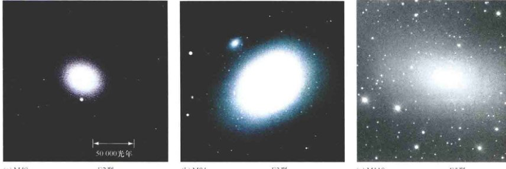
<div class="caption">
<strong>图2.5 椭圆星系的形状</strong><br/>
        (a) E2型椭圆星系M49的外观接近圆形。(b) M84略微扁长，被归类为E3型。这两个星系缺乏旋涡结构，而且没有显示出冷的星际尘埃或气体的证据，虽然它们都有延伸的热气体导致的X射线晕，且远远超出该星系的可见部分。(c) M110是一个矮椭圆星系，它是比它大得多的仙女星系的伴星系。[美国大学天文联盟 (AURA)、史密松天体物理观测台 (SAO)、R. 根德勒 (R. Gendler)]
    </div>
<p>一些巨椭圆星系的性质和之前所描述的颇有不同，因为它们已经被发现含有气体和尘埃盘。在那里，恒星正在形成。天文学家们认为，这些星系可能是富含气体的星系之间碰撞的结果。（见3.2节）事实上，星系碰撞可能已经发挥了重要的作用，确定了我们今天观测到的许多星系的外观。</p>
<p>在哈勃分类法中，在E7型椭圆星系和Sa型旋涡星系之间，是一类呈现出薄盘和扁平核球的星系，但不包含气体和旋臂。在图2.6中展示了两个这样的天体。这些星系被称为<strong>S0型星系</strong>——如果没有棒状结构，或<strong>SB0型星系</strong>——如果有棒状结构。它们也被称为<strong>透镜星系</strong>，因为它们有透镜形状的外观。它们看起来有点像尘埃和气体被剥夺了，只剩下一个星系盘的旋涡星系。近年来的观测表明，许多普通的椭圆星系内都有暗淡的盘状结构，就像S0型星系。这些椭圆星系和S0型星系的盘的起源还不确定，一些研究人员怀疑，S0型星系和椭圆星系可能是密切相关的。</p>
<!-- Page 7 -->
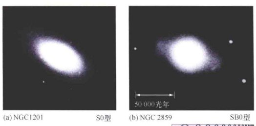
<div class="caption">
<strong>图2.6 S0型星系</strong><br/>
        (a) S0型星系（或透镜星系）包含星系盘和核球，但没有星际气体和旋臂。在许多性质上，它位于E7型椭圆星系和旋涡星系之间。(b) 除了在中央核球两边凸出的一条恒星物质形成的棒状结构之外，SB0型星系与S0型星系类似。[帕洛玛天文台 (Palomar)/加州理工学院 (Caltech)]
    </div>
<h3>不规则星系</h3>
<p>最后一类由哈勃分类的星系是一个包罗万象的类别——<strong>不规则星系</strong>，如此命名是因为其外观并不能让我们把它们放在刚刚讨论过的任何类别里。不规则星系往往含有丰富的星际物质和年轻的蓝色恒星，但它们没有任何正规的结构，如清晰的旋臂或中央核球。它们被分为两个子类：不规则I型星系和不规则II型星系。不规则I型星系看起来像畸形的旋涡星系。</p>
<p>不规则星系往往比旋涡星系小，但稍大于矮椭圆星系。它们包含的恒星数量通常介于10<sup>8</sup>和10<sup>10</sup>之间。这类星系中最小的被称为<strong>矮不规则星系</strong>。类似椭圆星系的情形，矮不规则星系是最常见的不规则星系。矮椭圆星系和矮不规则星系的数量近似相等，一起组成了宇宙中的绝大多数星系。它们经常被发现靠近一个更大的“父”星系。</p>

<div class="caption">
<strong>图2.7 麦哲伦云</strong><br/>
        麦哲伦云是南半球夜空中突出的特征。以16世纪的葡萄牙探险家费迪南德·麦哲伦的名字命名——他的探险队首次完成了环球航行，并将南半球星空的知识传到欧洲——这些矮不规则星系围绕银河系旋转，并陪伴银河系一起在宇宙中长途跋涉。(a) 这两团“云”在南方天空中的位置关系，揭示出小麦哲伦云 (b) 和大麦哲伦云 (c) 都有扭曲的不规则的形状。[斯特朗洛山和赛丁泉天文台、哈佛大学天文台、英国格林尼治皇家天文台、爱丁堡皇家天文台]
    </div>
<p>图2.7所示为<strong>麦哲伦云</strong>，它们是一对著名的不规则I型星系，绕我们的银河系旋转。在图1.16中，它们表现出适当的尺度。对它们内部的造父变星的研究表明，它们距我们的银河系中心约50kpc。<a class="xref" href="#">∞ (1.2节)</a> 大麦哲伦云包含约60亿倍太阳质量的物质，宽为数千秒差距。这两团“云”中含有大量的气体、尘埃和蓝色恒星（以及最近记录得最详尽的超新星），表示恒星形成正在进行。它们还含有许多年老的恒星和一些年老的球状星团，所以我们知道，其内部的恒星形成已经持续了很长的时间。</p>
<!-- Page 8 -->
<p>射电研究暗示，可能有一座氢气桥连接银河系和麦哲伦云，但仍需要更多的观测数据来确认这种连接。这是可能的。当麦哲伦云在轨道上最近一次接近我们的银河系时，银河系的潮汐力撕裂了从它们中来的气体流。当然，引力作用是相互的，许多研究者推理出，这引力可能反过来使我们的银河系变形、扭曲和增厚银盘的外围部分。<a class="xref" href="#">∞ (1.5节)</a></p>
<p>非常罕见的不规则II型星系（见图2.8），除了其形状不规则外，还有其他的特殊性，往往表现出明显的爆炸性或丝状的外观。它们的外观一度导致天文学家怀疑其内部正在发生“暴力”事件。然而，现在看来更可能的是，在一些（但不是全部）情况下，我们看到了曾经“正常”的两个星系近距离接触或碰撞的结果。</p>
<h3>哈勃序列</h3>
<p>表2.1总结了不同类型星系的基本特征。当哈勃第一次发表了他的分类方案后，他将这些星系排列到图2.9所示的“音叉图”中。在这个图中，星系类型从椭圆变化到旋涡、再到不规则，常被称为<strong>哈勃序列</strong>。</p>
<p>哈勃创建这个图的主要目的是表示星系在外观上的相似之处。然而，他也把音叉图作为星系的演化序列，从左至右，E0型椭圆星系演化成平坦的椭圆星系和S0型星系，并最终形成星系盘和旋臂。事实上，在哈勃的术语中，将椭圆星系作为“早型”星系，旋涡星系作为“晚型星系”，这一概念至今仍然被广泛使用。然而，在现代天文学家的认识中，哈勃序列的各种星系之间没有直接的演化连接。单个的星系不会从一个类型演化到另一个。旋涡星系不是椭圆星系长出了旋臂，椭圆星系也不是旋涡星系以某种方式抛掉了它们形成恒星的星系盘。一些天文学家怀疑，棒状结构可能是短暂的结构，棒旋星系因此可能会演化成普通的旋涡星系，但是，一般来说，天文学家知道哈勃类型之间没有简单的亲子关系。</p>

<div class="caption">
<strong>图2.8 不规则星系的形状</strong><br/>
        (a) 奇形怪状的星系NGC 4449位于一个星系群中，距离我们近400万pc。它奇怪的形状很可能是由于与伴星系的相互作用导致它的恒星、气体和尘埃完全重新排列而造成的。(b) 星系NGC 1569看起来呈现出一个正在爆炸的外观，可能是最近的星系级的恒星形成爆发导致的结果。[美国国家航空航天局 (NASA)]
    </div>
<!-- Page 9 -->
<table>
<caption>表2.1 不同类型的星系属性</caption>
<thead>
<tr>
<th></th>
<th>旋涡/棒旋 (S / SB)</th>
<th>椭圆<sup>1</sup> (E)</th>
<th>不规则 (Irr)</th>
</tr>
</thead>
<tbody>
<tr>
<td><strong>形状和结构的性质</strong></td>
<td>高度扁平的恒星和气体盘面，含有旋臂和中央核球。Sa和SBa型星系有最大的核球、最明显的旋涡结构、大致呈球形的恒星晕。SB型星系有一个细长的恒星和气体组成的中央“棒状”结构</td>
<td>无星系盘。恒星平滑地分布，形状的扁平范围从近似圆形(E0型)到非常扁平(E7型)。除了一个致密的中心核外，没有明显的子结构</td>
<td>没有明显的结构。不规则II型星系往往有“爆炸性”的外观</td>
</tr>
<tr>
<td><strong>包含的恒星情况</strong></td>
<td>星系盘包含年轻和年老的恒星。晕只由年老的恒星组成</td>
<td>只包含年老的恒星</td>
<td>同时包含年轻和年老的恒星</td>
</tr>
<tr>
<td><strong>气体和尘埃</strong></td>
<td>星系盘含有大量的气体和尘埃。晕里它们的含量较少</td>
<td>包含热的X射线发射气体，冷的气体和尘埃很少或没有</td>
<td>非常丰富的气体和尘埃</td>
</tr>
<tr>
<td><strong>恒星形成</strong></td>
<td>在旋臂有持续的恒星形成</td>
<td>在过去100亿年中没有明显的恒星形成</td>
<td>蓬勃的恒星形成正在进行</td>
</tr>
<tr>
<td><strong>恒星运动</strong></td>
<td>星系盘中的气体和恒星在圆形轨道上绕星系中心运动。晕中的恒星在三维空间中随机运动</td>
<td>恒星在三维空间中随机运动</td>
<td>恒星和气体有非常不规则的轨道</td>
</tr>
</tbody>
<tfoot>
<tr>
<td colspan="4"><small>① 如在文中指出的，一些巨椭圆星系看上去是富含气体的星系之间碰撞的结果，但这里列出的许多结论也有例外。</small></td>
</tr>
</tfoot>
</table>
<p>然而，上段中的关键词是<em>单个的</em>。正如3.2节中所描述的，现在有强大的观测证据表明，星系之间的碰撞和潮汐的相互作用很普遍，这些接触是驱动星系演化的主要物理过程。我们将在第3章返回到这个重要课题。</p>
<div class="concept-check">
<h4>概念理解检查</h4>
<p><strong>✓ 像银河系和仙女星系这样的旋涡星系在哪些方面不能代表星系整体？</strong></p>
</div>
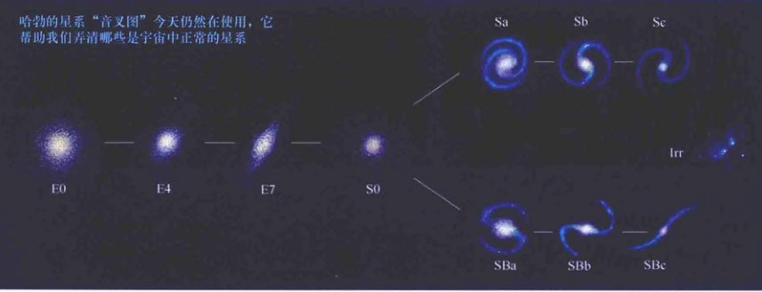
<div class="caption">
<strong>图2.9 星系“音叉图”</strong><br/>
        四种基本类型的星系——椭圆星系、旋涡星系、棒旋星系和不规则星系——在哈勃的“音叉”图中的位置暗示着演化，但这一个星系分类法没有已知的物理意义。正如我们将在第3章看到的，星系的确在演化，但不是（在任何方向上）沿着这个图定义的“哈勃序列”演化的。
    </div>
<!-- Page 10 -->
<h2>2.2 星系在太空的分布</h2>
<p>现在，我们已经看到了星系的一些基本性质，接下来让我们探索在银河系以外的无限宇宙中，星系是如何分布的。星系在空间中不是均匀分布的。相反，它们往往聚集成较大的物质团块。正如我们将要看到的，这种不均匀的分布对确定它们的外表和它们的演变至关重要。而在天文学中，一直以来，我们对天体的理解取决于我们确定它们距离的能力。因此，我们从更加密切地关注天文学家使用的测量星系距离的方法开始。</p>
<h3>延伸距离尺度</h3>
<p>天文学家估计，在可观测的宇宙中，存在大约400亿个和我们星系一样亮（或者更亮）的星系。有的离我们足够近，可以用造父变星技术来测量——天文学家已探测和测量了远至25 Mpc的星系中的造父变星的周期（见图2.10）。<a class="xref" href="#">∞ (1.2节)</a> 但是，一些星系不包含造父变星（你能想到发生这种情况的一些原因吗？）。然后，在任何情况下，大多数已知的星系的距离远超过25 Mpc。非常遥远的星系中的造父变星根本无法被很好地观测，即使是通过世界上最大的望远镜，我们也无法明确测量其亮度和周期。为了扩展我们的距离测量阶梯，我们必须找到一些新的天体类型来进行研究。</p>
<p>研究人员解决这个问题的方法之一是通过观测<strong>标准烛光</strong>——容易辨认的天体，其光度已经被明确测定。其基本思想非常简单，一旦一个天体被确定为一个标准烛光——比如通过它的外观或其光变曲线的形状——它的光度就可以被估计。比较光度和视亮度，就可以确定天体的距离，并因此得出其所在星系的距离。注意，除了光度的确定方式不同，造父变星的技术依赖于相同的原理。</p>
<p>最为有用的，一个标准烛光必须：①有一个明确定义的光度，这样对它亮度估计的不确定性很小；②足够明亮，可以在很远的地方被看到。多年来，天文学家们已经尝试着将许多类型的天体作为标准烛光——新星、发射星云、行星状星云、球状星团、I型（碳燃烧爆发）超新星，甚至整个星系。然而，并非所有天体都同样有用：有些天体的光度内在展宽较大，使得用它们测量距离不太可靠。</p>
<p>近年来，行星状星云和I型超新星已被证明是特别可靠的标准烛光，后者有非常一致的峰值光度，并且非常明亮，使它们在数百兆秒差距的距离外也能被确认和测量。I型超新星有很小的光度展宽，这个展宽与这类“暴力”事件发生的具体环境有关。正如在《今日天文：恒星：从诞生到死亡》第10章中讨论的，当吸积中的白矮星达到碳融合开始时明确定义的临界质量时会爆炸。爆炸的幅度对白矮星如何形成以及随后是如何达到临界质量的这些细节相对不敏感，因此所有此类超新星都有非常相似的性质。因此，当I型超新星在一个遥远的星系中被观测到时（我们假设它发生在该星系中，而不是在前景），天文学家可快速获得对该星系距离的准确估计。</p>

<div class="caption">
<strong>图2.10 室女星系团中的造父变星</strong><br/>
        这6张快照按顺序记录了旋涡星系M100中的造父变星的周期性变化，M100是室女星系团的成员。造父变星位于每张插入图的中央，图上的数字标明了在1994年拍摄这些图像的时间。这颗星看起来像正方形，因为数字CCD相机的高放大率——我们看到了图像的单个像素。这颗24等的星每7周亮度变化约两个星等。[美国国家航空航天局 (NASA)]
    </div>
<!-- Page 11 -->
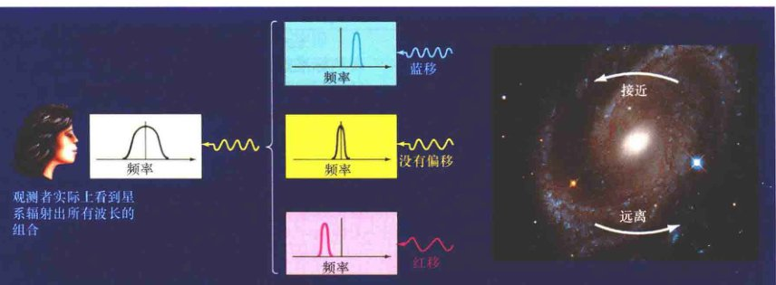
<div class="caption">
<strong>解说图2.11 星系自转</strong><br/>
        星系的自转导致它发出的—些辐射蓝移、—些辐射红移。从远处看，当星系的所有辐射组合成—个单一的光束被接收和被光谱分析时，红移和蓝移成分将令星系的谱线展宽（谱线致宽）。致宽量的测量是星系自转速度的一个直接测量，如这里显示的NGC 4603。[美国国家航空航天局 (NASA)]
    </div>
<p>标准烛光的一个重要替代在20世纪70年代被发现。天文学家发现，距银河系几十兆秒差距内的旋涡星系的自转速度和光度有密切的关系。自转速度是旋涡星系总质量的一个度量，所以这个性质与光度相关也许并不令人惊讶。<a class="xref" href="#">∞ (1.5节)</a> 那么，究竟什么令人惊讶呢？答案是，这个相关性究竟有多紧密。现在已经知道，有一个<strong>塔利-费舍尔关系</strong>（以它的发现者命名），使我们能够对一个旋涡星系的光度得到一个非常准确的估计——只需要简单地通过观测星系的自转速度有多快。像往常一样，比较星系的（真）光度和它的（观测）亮度，可以得到它的距离。</p>
<p>要想看到如何使用该方法，想象我们正好侧视一个遥远的旋涡星系，并正在观测一个特定的发射线，如图2.11所示。总体上正在靠近我们的那一侧星系的谱线因为多普勒效应而蓝移；另一侧的星系则在远离我们而去，因此辐射会相应地红移。这样一来，那条谱线的整体效果会被星系的自转“污染”，或称致宽。自转速度越快，致宽量越大（与恒星等效）。因此，我们可以通过测量这个致宽量，确定星系的自转速度。然后，我们可以通过塔利-费舍尔关系知道这个星系的光度。</p>
<p>这些研究中通常使用的特定谱线实际上是射电波段的一部分，这个谱线是星系盘上冷的中性氢的21厘米谱线。这条谱线之所以比可见光谱线更好用，是因为：①可见光辐射会被星系盘中的尘埃强烈吸收；②21厘米谱线通常很窄，使得展宽更容易被观测到。此外，天文学家通常使用红外光度而不是可见光光度，以避免尘埃造成的吸收问题——无论是在我们自己的银河系，还是在其他星系都有这问题。</p>
<p>塔利-费舍尔关系可以用来测量的旋涡星系的距离大约可以到200 Mpc，超过该距离，谱线致宽量变得越来越难以准确测量。在椭圆星系中，有着类似的谱线展宽与星系直径的联系。一旦这个星系的直径和角大小已知，其距离便可以通过初等几何计算出。这些方法绕过天文学家通常使用的许多标准烛光，提供独立的方法来确定遥远天体的距离。</p>
<p>如图2.12所示，标准烛光和塔利-费舍尔关系形成了我们宇宙阶梯的第3个和第4个梯级（在第1章做过扩展介绍）。<a class="xref" href="#">∞ (1.2节)</a> 事实上，它们可能代表了十几种相关而又独立的技术，天文学家已经用这些技术绘制了宇宙的大尺度图景。正如在下层梯级中的情况，我们使用更多其他测量距离的方法来校准这些新技术。以这种方式，距离测量的过程“引导”自身适用于越来越大的距离。然而，在同一时间，在每个步骤中，误差和不确定性会积累，因此最远的天体的距离是我们知道得最不确切的。</p>
<!-- Page 12 -->
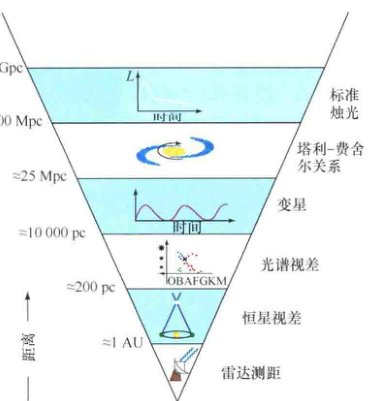
<div class="caption">
<strong>图2.12 河外星系的距离阶梯</strong><br/>
        一个倒置的金字塔总结了用于研究宇宙在不同范围内测距的技术。在底部显示了这个阶梯的四个梯级——雷达测距、恒星视差、光谱视差、变星，这些可以测量最近的星系。要想走得更远，我们必须使用其他技术，例如，塔利-费舍尔关系和使用标准烛光——基于四个最低的梯级所测定的距离。
    </div>
<h3>星系团</h3>
<p>图2.13是所有已知的距银河系约1 Mpc的主要天体的位置示意图。我们的星系似乎有十几个卫星星系，包括前面讨论过的两个麦哲伦云和最近发现的同伴（在图中标记为“人马座矮星系”），它们几乎就在银河系的平面内。仙女星系距离我们800 kpc，也被标在了图上，周围环绕着它自己的卫星星系。插入图显示了仙女星系的两个星系邻居。M33是一个旋涡星系、M32是一个矮椭圆星系——在图1.2(a)中很容易看到，位于该图的下部，仙女星系的中央核球的右下方。</p>

<div class="caption">
<strong>图2.13 本星系群</strong><br/>
        本星系群由距我们的银河系约1 Mpc的近50个星系组成，只有少数是旋涡星系，大部分是矮椭圆星系或不规则星系，这里只展示了其中一部分。旋涡星系标为蓝色，椭圆星系标为粉红色，不规则星系标为白色——所有的星系都按照相同的比例尺描绘。右上的小图显示了银河系与一些卫星系的相互关系。左上的照片显示了仙女星系 (M31) 的两个著名的邻居——旋涡星系M33和矮椭圆星系M32（在图1.2(a)——仙女星系的大尺度照片——中也可见）。[M. 本·丹尼尔 (M. Ben Daniel)、美国国家航空航天局 (NASA)]
    </div>
<!-- Page 13 -->

<div class="caption">
<strong>图2.14 室女星系团</strong><br/>
        在室女星系团的中央区域，距离地球约17Mpc的地方，可以看到许多大型的旋涡星系和椭圆星系。插入图显示了围绕着巨椭圆星系M86的几个星系。一个更大的椭圆星系——M87——在底部被标出，我们将在后面的章节中讨论。[M. 本·丹尼尔 (M. Ben Daniel)、美国大学天文联盟 (AURA)]
    </div>
<p>总而言之，近50个星系分布在我们的银河系附近。它们中的三个（银河系、仙女星系和M33）是旋涡星系，其余都是矮不规则星系和矮椭圆星系。这些星系在一起形成了<strong>本星系群</strong>——宇宙中一个新的结构层次，比星系的尺度更大。如图2.13所示，本星系群的直径略大于1 Mpc。银河系和仙女星系是本星系群目前最大的成员、大部分规模较小的星系被其中某一个的引力束缚着。本星系群中的星系靠引力结合在一起，像一个星团中的恒星，但尺度要大100万倍。更一般地，一个靠互相之间的引力而维持在一起的星系的集合叫作<strong>星系团</strong>。</p>
<p>走出本星系群，我们来到的下一个大星系团——室女星系团（见图2.14），以它被发现的星座的名字命名。室女星系团距银河系约17 Mpc，包含的星系不只有50个，而是超过2500个。它们被引力约束成一个紧密联系在一起的组织，跨度约3 Mpc。</p>
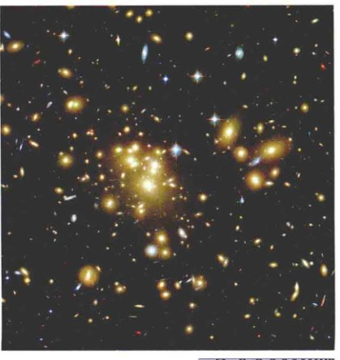
<div class="caption">
<strong>图2.15 遥远的星系团</strong><br/>
        这个叫Abell 1689的星系团包含数量巨大的星系，距离地球近10亿pc。事实上，这张照片上每一个小光点都是一个独立的星系。依靠最强大的望远镜，天文学家现在可以看到，即使在这个很大的距离上，某些星系中也有旋涡结构。我们也看到许多星系碰撞，有些会相互夺走一些物质，还有的并合成单个星系。[美国国家航空航天局 (NASA)]
    </div>
<p>无论我们向宇宙的哪里看，都能发现星系。大多数星系是星系群或星系团的成员。在实践中，“群”和“团”的区别主要是一个习惯问题。星系群一般只包含几个明亮的星系（如银河系和仙女星系），且形状非常不规则；而星系团较大、较“富裕”，像室女星系团，可能包含数千个单个的星系，相对均匀地分布在空间中。而图2.1所示的后发星系团，距离我们大约100 Mpc，是另一个富星系团的例子。图2.15是一个遥远得多的富星系团的长曝光照片，距离地球约700 Mpc。有相当数量的星系（也许是40%）不是任何星系群或星系团的成员，它们显然是孤立的星系，沿着星系团际空间移动。（为简单起见，我们在后文中将使用“星系团”一词来指代任何引力束缚的星系集合，不管大还是小。）</p>
<!-- Page 14 -->
<p>我们将在第3章和第4章再讨论物质在宇宙中的大尺度分布。</p>
<div class="concept-check">
<h4>科学过程理解检查</h4>
<p><strong>✓ 天文学家测量遥远星系的距离时会遇到哪些问题？</strong></p>
</div>
<h2>2.3 哈勃定律</h2>
<p>现在，我们已经看到了全宇宙星系的一些基本性质，让我们把关注点转移到星系和星系团的大尺度运动上。在星系团中，单个星系的运动多少会有些随机。你可能会想到，在更大的尺度上，星系团本身也有随机的、无序的运动——一些星系团向这边运动，一些向那边。但事实却并非如此：在大尺度上，星系和星系团都以一个非常有序的方式移动。</p>
<h3>宇宙退行</h3>
<p>1917年，在珀西瓦尔·洛厄尔领导下工作的美国天文学家维斯托·M·斯里弗报道说，几乎每一个他观测的旋涡星系的光谱都在红移——它们在远离我们的银河系。现在知道，除了少数邻近的星系，所有星系都加入了一个在所有方向上远离我们的总体运动。不属于任何星系团的单个星系在稳定地退行。星系团也有整体的退行运动，虽然其个别成员星系有一些随机移动。（考虑一个装满萤火虫的抛向空中的罐子，罐子内的萤火虫类似星系团内的星系，有来自个体意愿的随机运动，但罐子作为一个整体，如同星系团，是沿着特定方向运动的。）</p>
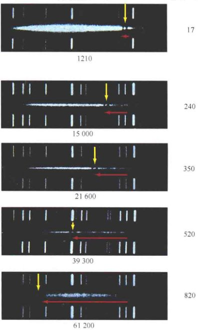
<div class="caption">
<strong>图2.16 星系光谱</strong><br/>
        右列是几个星系的照片，左列是它们的可见光光谱。红移量（记为水平的红色箭头）和每个星系到银河系的距离（中央的数字）都是从上到下依次增加的。垂直的黄色箭头表示光谱上的同一对暗吸收线。每个光谱的顶部和底部的许多垂直的白线是实验室参考谱线。[改编自帕洛玛天文台 (Palomar Observatory)/加州理工学院 (Caltech)]
    </div>
<p>图2.16显示了几个星系的可见光光谱，按照到银河系的距离从近到远排序。光谱是红移的，表明对应的星系正在退行，红移的程度在图上从上到下增加。多普勒位移同距离之间是相关的：距离越远，红移越大。宇宙中几乎所有星系都有这个趋势。（本星系群内的两个星系，其中包括仙女星系和室女星系团的几个星系，显示出正向我们靠近的蓝移，但这个结果并不能反映它们所在星系团的整体运动——回想一下在罐子里的萤火虫。）</p>
<!-- Page 15 -->
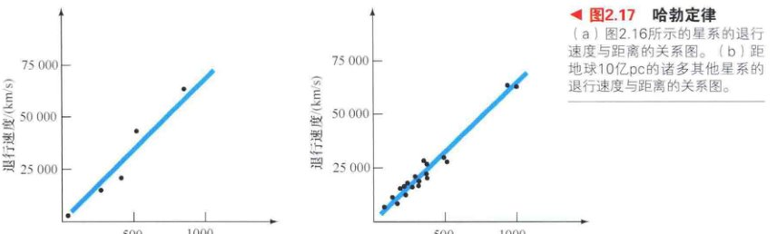
<div class="caption">
<strong>图2.17 哈勃定律</strong><br/>
        (a) 图2.16所示的星系的退行速度与距离的关系图。<br/>
        (b) 距地球10亿pc的诸多其他星系的类似关系图。这种图是由埃德温·哈勃在20世纪20年代首次提出的，现在以他的名字命名为哈勃图。数据点的位置通常接近一条直线，表明星系后退的速度与到我们的距离成正比。这条规律被称为<strong>哈勃定律</strong>。我们可以为任意一个星系集合构造这样一个图，通过这个图，我们能确定它们的距离和速度。哈勃图描述的普遍退行，有时也被称为哈勃流。
    </div>
<p>星系的退行运动证明了宇宙在最大尺度上既不稳定，也不是一成不变的。宇宙（实际上是空间本身，见4.2节）在膨胀！但是，我们应搞清楚究竟什么在膨胀，什么没有膨胀。哈勃定律并不意味着人类、地球、太阳系，甚至个别星系和星系团在物理尺寸上有所增加。这些岩石、行星、恒星和星系的原子靠自己内部的力结合在一起，并不会变得越来越大。只有宇宙最大的框架——分隔开星系团的浩瀚空间——在膨胀！</p>
<p>为了区分退行引起的红移与天体自身的运动引起的红移——例如，星系围绕星系团的运动或星系核的爆发事件，哈勃流导致的红移被称为<strong>宇宙学红移</strong>。如果一个天体距离特别远以至于表现出较大的宇宙学红移，我们就说该天体位于宇宙学距离——可以与宇宙本身的尺度相媲美的距离。</p>
<p>哈勃定律有一些相当戏剧性的影响。如果几乎所有的星系都根据哈勃定律在退行，那么是不是意味着它们一开始是从一个单一的点开始旅行的呢？如果我们能让时间倒流，是不是所有的星系都会飞回到这一点呢？也许这个点会是在遥远的过去的一个极其“暴烈”的事件的现场？答案是肯定的——但可能不是你所想的样子！在第4章和第5章，我们将探讨哈勃流的后果，我们宇宙的过去和未来的演化。但就目前而言，我们将哈勃定律的宇宙学意义先放在一边，仅仅先将它作为一种方便的测距工具使用。</p>
<h3>哈勃常数</h3>
<p>在哈勃定律里面，退行速度与距离之间的比例常数被称为<strong>哈勃常数</strong>，用符号H₀表示。图2.17所示的数据满足方程：</p>
<p style="text-align: center; font-weight: bold; font-size: 1.2em;">退行速度 = H₀ × 距离</p>
<p>哈勃常数的值是图2.17(b)中直线的斜率——退行速度除以距离。通过图上的数字，我们得到约70,000 km/s除以1000 Mpc，得到70 km/(s · Mpc)（千米每秒兆秒差距，H₀最常用的单位）。天文学家不断努力完善哈勃图的精度和H₀的估计结果，因为哈勃常数是自然界的一个最基本的数，它确定了整个宇宙的膨胀速度。</p>
<!-- Page 16 -->
<p>哈勃得出的H₀的原始值约为500 km/(s · Mpc)，远远高于目前公认的值。这种高估几乎完全源于当时对宇宙距离的观测错误，特别是造父变星和标准烛光的标度。随着各种观测误差的识别和解决，距离测量变得更可靠，H₀的测量值迅速下降。对外发布的H₀的估计数字大致在20世纪60年代中期进入“现代”范围（也就是说，偏离现代值不到20%）。</p>
<p>由于测量技术不断提高，哈勃常数的不确定性持续降低，在21世纪初，H₀的所有领先的测量，通过各种不同的技术——塔利-费舍尔测量、室女星系团造父变星的研究、标准烛光的观测（如I型超新星）——得到的结果彼此非常一致。在本书的剩余部分，我们将采用这样一个四舍五入值：H₀ = 70 km/(s · Mpc)（在最近的所有结果中大致处于中间的选择，并且还与一些我们将在第5章详细讨论的精确的宇宙学测量一致）作为当前哈勃常数的最佳估计值。</p>
<h3>距离阶梯的顶端</h3>
<p>利用哈勃定律，我们可以仅仅通过测量物体的退行速度，然后除以哈勃常数，得出一个遥远天体的距离。因此，哈勃定律位于距离测量技术的倒金字塔顶端（见图2.18）。这第七种方法很简单地由哈勃定律假设得出。如果这个假设是正确的，哈勃定律就可以让我们测量宇宙中遥远的距离，只要我们得到一个天体的光谱，我们就可以判断它有多么遥远。</p>

<div class="caption">
<strong>图2.18 宇宙距离阶梯</strong><br/>
        哈勃定律居于距离测量技术的最上层。它可以用来确定远到可观测宇宙极限的天体的距离。
    </div>
<p>许多红移天体的退行速度能达到光速的较大比例。迄今在宇宙中观测到的最遥远的天体——一些年轻的星系和类星体（2.4节）——的红移（波长增加的比例）可以达到8，这意味着它们的辐射在波长上不仅仅只是被移动了百分之几——我们曾经讨论过的大多数的天体的红移值就是如此——而是达到了9倍！它们的紫外光谱线一路红移进入了光谱的红外部分！详细说明2-1详细讨论了这样的大红移的意义和解释，显然暗示了退行速度可以与光速相比。根据哈勃定律，表现出这么大红移的天体到我们的距离超过9000 Mpc，几乎靠近天文学家仍未能探测的所能观测到的宇宙的极限。</p>
<p>光速是有限的。光——以及任何一种辐射——需要一定的时间，才能从空间中的一个点“旅行”到另一个点。我们现在看到的这些最遥远天体的辐射起源于很久以前。令人难以置信的是，这些辐射是近130亿年前发出的（见表2.2），大大早于我们的行星、我们的太阳，甚至我们银河系的诞生之时！</p>
<div class="concept-check">
<h4>概念理解检查</h4>
<p><strong>✓ 哈勃定律与本书中使用的其他河外星系距离测量技术有什么不同？</strong></p>
</div>
<!-- Page 17 -->
<aside class="sidebar">
<h4>详细说明 2-1：相对论红移和回溯时间</h4>
<p>在讨论非常遥远的天体时，天文学家通常讨论它们的红移而不是距离。事实上，研究人员谈论一个事件发生在某个特定的红移是很平常的——也就是说，今天接收到的从该事件发出的光以特定的量发生了红移。当然，因为有了哈勃定律，红移和距离成了一回事。但是，红移是一个更好的量，因为它是一个可直接观测的天体性质，而距离是由红移与哈勃常数根据哈勃定律计算得出的，其值无法准确得到。（在第4章中，我们会看到，天文学家在宇宙学研究中为什么更喜欢使用红移的另一个更加根本的理由。）</p>
<p>一束光线的红移，被定义为光源退行运动附加的波长与原始波长之比，因此，红移为1对应于波长翻倍。根据前面给出的多普勒频移公式，从一个以一定速度远离我们而去的源接收到的辐射的红移如下：</p>
<p style="text-align: center; font-style: italic;">红移 = (观测波长 - 真实波长) / 真实波长 = 退行速度 v / 光速 c</p>
<p><strong>例子：</strong>让我们用两个例子来说明这个关系。将光速c四舍五入为300,000 km/s。距离100 Mpc的一个星系，退行速度（根据哈勃定律）为70 km/(s · Mpc) × 100 Mpc = 7,000 km/s。因此，它的红移是 7,000 km/s ÷ 300,000 km/s = 0.023。相反，一个红移0.05的天体的退行速度为0.05 × 300,000 km/s = 15,000 km/s，因此距离为15,000 km/s ÷ 70 km/(s · Mpc) = 214 Mpc。</p>
<p>不幸的是，虽然上述方程在低速时是正确的，但它显然没有考虑相对论效应的影响。日常的物理定律在速度开始接近光速时必须进行修改，多普勒频移方程也不例外。虽然方程在速度远小于光速时有效，但当 v = c 时，红移却不是1，而是无穷大。也就是说，从接近光速远离我们的天体上发出的辐射，其波长几乎会红移到无穷大。</p>
<p>因此，即使你发现许多星系和类星体的红移大于1，也不要惊慌，这并不意味着它们正超光速退行，而只是意味着此时并不适用简单的公式。事实上，真正的红移和距离之间的联系是相当复杂的，需要我们对宇宙过去的历史做出关键的假设（见第4章）。我们可以使用表2.2代替公式，这是一个红移和距离的换算表。所有显示的值基于合理的假设，即使对很大的红移也可用。我们采用的哈勃常数为70 km/(s · Mpc)，并假设一个平直的宇宙，物质（大多数是暗物质）对总密度的贡献只有1/4多一点（见4.6节）。表中的转换在本书中始终贯穿。“v/c”开头的列提供基于多普勒效应并适当考虑相对论的等效退行速度。尽管如此，这也不是红移的正确解释（见4.2节），我们把它放在这里进行比较，仅仅是因为它是如此经常地出现在大众媒体上。</p>
<p>由于宇宙正在膨胀，星系的“距离”不能被非常明确地定义出来。所附的距离，究竟是指我们今天看到的它的光在刚发出时的距离，还是现在它到我们的距离（如表所示，即使我们并没有看到这个星系今天的样子），或其他一些更合适的量？正是因为存在这种模糊，天文学家们在工作中更愿意使用一个被称为<strong>回溯时间</strong>的概念（如表2.2最后一列所示），这是一个简单的量，描述一个天体在多久之前辐射出我们现在所看到的光。天文学家经常谈论红移，有时谈论回溯时间，但他们几乎不谈论高红移天体的距离。（从来不提退行速度，尽管你常常从新闻中听到！）然后请记住，红移是在这个讨论中唯一明确的测量值。而所有的“派生”量，如距离和回溯时间，都要求我们做出关于宇宙是如何随时间演变的具体假设。</p>
<p>对于附近的源，回溯时间在数值上等于以光年表示的距离：今晚我们收到的一个距离我们1亿光年的星系的光，是在1亿年前发出的。然而，对于更遥远的天体，由于宇宙膨胀，回溯时间和目前以光年表示的距离不同，差异随红移的增加而显著增加。</p>
<p>做一个简单的比喻，想象一只蚂蚁爬过一个膨胀的气球表面，相对气球表面的速度是恒定的1 cm/s。10s后，蚂蚁可能认为它已经走过了10 cm的距离，但旁边的观测者用尺子测量会发现（沿着气球表面测量），它实际上爬过的距离超过10 cm，因为气球在膨胀。以完全相同的方式，给定红移的星系的当前距离取决于宇宙在过去的膨胀。例如，一个星系现在位于距离地球150亿光年的地方，但它发出我们现在所看到的光时，它到地球的距离要近得多。因此，它的光抵达我们所花费的时间大大低于150亿年——事实上，只有大约100亿年。</p>
</aside>
<h2>2.4 活动星系核</h2>
<p>2.1节中所描述的星系——符合不同的哈勃分类的那些星系——通常被称为正常星系。正如我们所看到的，它们的光度范围从矮椭圆星系和不规则星系的太阳光度的100万倍到最大的超巨椭圆星系的太阳光度的1万亿倍。为了便于比较，取其整数，银河系的光度为2 × 10<sup>10</sup>太阳光度或大约10<sup>37</sup> W。</p>
<p>在这最后两节，我们把注意力集中在“明亮”的星系上——这通常意味着星系的光度超过太阳光度的10<sup>10</sup>倍。在这个意义上，我们的银河系是明亮的，但并不异常。</p>
<h3>星系辐射</h3>
<p>相当一部分明亮的星系——也许多达40%——不太适合被分类进“正常”的星系类型。它们的光谱与它们那些正常的“表兄弟”之间有显著的差异，它们的光度可以非常巨大，它们被称为<strong>活动星系</strong>，是天文学家们非常感兴趣的天体。它们中最明亮的是宇宙中已知最活跃的天体，并且所有的活动星系都可以代表星系演化的重要阶段（见3.4节）。在可见光波段，活动星系往往看起来像正常星系——熟悉的结构，如星系盘、核球、恒星、暗尘埃带等都可以被看到。然而在其他波段，它们不寻常的特性更加明显。</p>
<!-- Page 18 -->
<table>
<caption>表2.2 红移、距离和回溯时间</caption>
<thead>
<tr>
<th>红移</th>
<th>v/c</th>
<th colspan="2">当前距离</th>
<th>回溯时间</th>
</tr>
<tr>
<th></th>
<th></th>
<th>Mpc</th>
<th>10<sup>6</sup>光年</th>
<th>/10<sup>6</sup>年</th>
</tr>
</thead>
<tbody>
<tr><td>0.000</td><td>0.000</td><td>0</td><td>0</td><td>0</td></tr>
<tr><td>0.010</td><td>0.010</td><td>43</td><td>139</td><td>139</td></tr>
<tr><td>0.025</td><td>0.025</td><td>107</td><td>347</td><td>343</td></tr>
<tr><td>0.050</td><td>0.049</td><td>212</td><td>691</td><td>674</td></tr>
<tr><td>0.100</td><td>0.095</td><td>419</td><td>1370</td><td>1300</td></tr>
<tr><td>0.200</td><td>0.180</td><td>820</td><td>2670</td><td>2440</td></tr>
<tr><td>0.250</td><td>0.220</td><td>1010</td><td>3300</td><td>2950</td></tr>
<tr><td>0.500</td><td>0.385</td><td>1910</td><td>6210</td><td>5080</td></tr>
<tr><td>0.750</td><td>0.508</td><td>2680</td><td>8750</td><td>6650</td></tr>
<tr><td>1.000</td><td>0.600</td><td>3350</td><td>10900</td><td>7820</td></tr>
<tr><td>1.500</td><td>0.724</td><td>4450</td><td>14500</td><td>9420</td></tr>
<tr><td>2.000</td><td>0.800</td><td>5300</td><td>17300</td><td>10400</td></tr>
<tr><td>3.000</td><td>0.882</td><td>6520</td><td>21300</td><td>11600</td></tr>
<tr><td>4.000</td><td>0.923</td><td>7370</td><td>24000</td><td>12200</td></tr>
<tr><td>5.000</td><td>0.946</td><td>8000</td><td>26100</td><td>12600</td></tr>
<tr><td>6.000</td><td>0.960</td><td>8490</td><td>27700</td><td>12800</td></tr>
<tr><td>7.000</td><td>0.969</td><td>8890</td><td>29000</td><td>13000</td></tr>
<tr><td>8.000</td><td>0.976</td><td>9220</td><td>30100</td><td>13100</td></tr>
<tr><td>9.000</td><td>0.980</td><td>9500</td><td>31000</td><td>13200</td></tr>
<tr><td>10.000</td><td>0.984</td><td>9740</td><td>31800</td><td>13300</td></tr>
<tr><td>50.000</td><td>0.999</td><td>12400</td><td>40400</td><td>13700</td></tr>
<tr><td>100.000</td><td>1.000</td><td>13000</td><td>42500</td><td>13800</td></tr>
<tr><td>∞</td><td>1.000</td><td>14700</td><td>47800</td><td>13800</td></tr>
</tbody>
</table>
<p>正常的星系辐射出的大部分能量在电磁波谱上落在可见光部分或其附近，很像从恒星发出的辐射。事实上，在很大程度上，我们从一个正常的星系看到的光只是它的大量恒星发出的光的综合（星际尘埃的影响要考虑在内），可以近似用黑体曲线来描述。与此相反，如图2.19中所描绘的，活动星系的辐射峰值不在可见光范围内。最活跃的星系确实发出大量的可见光辐射，但它的能量中多得多的部分在非可见光波段被辐射出去，既包括比可见光波长更长的，也包括更短的。换句话说，活动星系的辐射与我们想象的不同——如果我们想象的辐射是无数恒星辐射的综合的话。它们的辐射被称为<strong>非热辐射</strong>。</p>
<p>许多非星辐射的明亮的星系被称为<strong>星爆星系</strong>——曾经是正常的星系，现在则到处都有大量的恒星形成，这最有可能是与邻近星系相互作用的结果。如图2.8所示的不规则星系NGC 1569是一个典型的例子。在第3章，我们将研究这些重要的星系及其在星系演化中的地位。然后，在本书中，我们将使用术语“活动星系”来表示这样一个星系：其异常的活动与发生在星系核中或者附近的“暴力”事件相关。这种星系的核被称为<strong>活动星系核</strong>。</p>
<!-- Page 19 -->

<div class="caption">
<strong>图2.19 星系能量光谱</strong><br/>
        正常星系发出的能量明显和活动星系发出的不同。此图展示了特定类型的所有星系的一般情况，并不代表任何一个单独的星系。
    </div>

<div class="caption">
<strong>图2.20 活动星系</strong><br/>
        这张星系NGC 7742的照片活像一个煎鸡蛋，蓝色的环是恒星形成区，围绕着一个非常明亮的黄色核心，这个核心的宽度大约为1kpc。这个活动星系结合了恒星形成与它的中央核心的强发射，距离我们大约24Mpc。[美国国家航空航天局 (NASA)]
    </div>
<p>即使有这个限制，星系的性质仍然有相当大的变化，天文学家已经确定和编制了一系列性质各异的星系进入“活动星系”的类别。例如，图2.20显示了一个活动星系，同时展示出了核心的活动和广泛的恒星形成，带蓝色的新生恒星环围绕着一个宽度约1kpc的正在激烈发射的星系核。与其试图描述整个活动星系“动物园”，我们不如讨论三个基本类型：充满活力的<strong>赛弗特星系</strong>和<strong>射电星系</strong>以及更明亮的<strong>类星体</strong>。虽然这些天体都位于活动星系范围的“高亮度”边界，并且也许只占活动星系总数的百分之几，但其性质将允许我们确定和讨论一般活动星系的共同特点。</p>
<p>星系活动与中央核心的联系让人回忆起在第1章中讨论的银河系的中心。<a class="xref" href="#">∞ (1.7节)</a> 在银河系中，这一点似乎很清楚：星系核内的活动与中央超大质量黑洞——其存在是由观测星系最中心大约1 pc区域内恒星运行的情况而得出的——有关。正如我们将要看到的，大多数天文学家认为，在活动星系的核心，基本上也有相同的东西。“活动”星系和“正常”星系的主要区别在于，非星核心发出的辐射在一定程度上超过了星系的剩余部分发出的辐射。如果想要了解星系的演化，这是一个非常重要的主题。我们将第3章回到这个话题。在本章的剩余部分，我们集中描述活动星系和驱动它们的黑洞的特性。</p>
<h3>赛弗特星系</h3>
<p>1943年，卡尔·赛弗特——一位美国光学天文学家，在威尔逊山天文台研究旋涡星系，发现了一类活动星系，这类星系现在以他的名字命名。<strong>赛弗特星系</strong>的性质介于正常星系和已知最有活力的活动星系之间。</p>
<p>从表面上看，赛弗特星系类似于正常的旋涡星系，如图2.21(a)所示。事实上，赛弗特星系的星系盘和旋臂中的恒星产生的可见光辐射与正常的旋涡星系中的恒星大约相等。然而，大多数赛弗特星系的能量从星系核中发出——图中因为曝光过度而发白的区域。赛弗特星系核的亮度比我们银河系的中心亮大约10,000倍。事实上，最亮的赛弗特星系核的能量比整个银河系还要强10倍。</p>
<p>有些赛弗特星系产生的辐射涵盖了广泛的波长范围，从红外一直到紫外，甚至X射线。然而，它在红外波段辐射出大部分（约75%）能量。科学家认为，这些赛弗特星系发出的大部分高能辐射被星系核内或附近的尘埃所吸收，然后以红外辐射的形式再发射出去。</p>
<!-- Page 20 -->

<div class="caption">
<strong>图2.21 赛弗特星系</strong><br/>
        (a) 圆规星系，一个有着明亮致密核心的赛弗特星系，距离我们4Mpc。这是离我们最近的活动星系之一。<br/>
        (b) 该图说明了赛弗特星系3C 84光度的不规则变化（时间跨度超过30年）。这些观测基于射电波段。可见光和X射线的光度变化也是如此。[美国国家航空航天局 (NASA)、美国国家射电天文台 (NRAO)]
    </div>
<p>赛弗特星系的谱线与银河系中心的谱线很相似。<a class="xref" href="#">∞ (1.7节)</a> 有一些谱线非常宽，最有可能表示在星系核中有快速(5000 km/s或以上)的内部运动。但并非所有的谱线都宽，有一些赛弗特星系并没有表现出有致宽的谱线。此外，它们的能量发射经常随时间变化 [见图2.21(b)]。一个赛弗特星系的光度可以在远小于1年的时间里加倍或减半。这些光度的快速波动导致我们得出结论，赛弗特星系的能源必然相当致密——简单地说，一个天体不能在短于辐射穿过它所消耗的时间内发生“闪烁”。因此发射区的尺度必然小于1光年——考虑到大量的能量从其中发出来，这是一个非常小的区域。</p>
<p>总之，我们观测到的赛弗特星系的快速时变和强大的射电和红外光度意味着在它们的核心发生着“暴力”的非星活动。正如前面提到的，这个活动的性质类似于发生在我们自己银河系中心的过程，但其量级比发生在银河中心的相对温和的事件大数千倍。<a class="xref" href="#">∞ (1.7节)</a></p>
<h3>射电星系</h3>
<p>正如名字所暗示的，<strong>射电星系</strong>是在电磁波谱的射电部分释放出大量能量的活动星系。它们与赛弗特星系的区别，不仅在于它们辐射的波长，也在于其发射区域的外观和延展程度的不同。</p>
<p>图2.22(a)展示了射电星系半人马A，距地球约4 Mpc。这个星系的射电辐射几乎没有从致密的核发出的。相反，能量是从两个巨大的被称为<strong>射电瓣</strong>的扩展区域发射出的，射电瓣是圆形的气体云，跨越0.5 Mpc的尺度，远远超出了可见光星系的范围。①射电星系的射电瓣无法被可见光探测到，但实在是巨大的。从一端到另一端，它们的跨度通常可以达到银河系大小的10倍！可以与整个本星系群的规模相媲美。</p>
<p>图2.22(b)显示了该星系的可见光、射电和X射线发射之间的关系。在可见光波段，半人马A显然是一个巨大的E2型星系，直径约500 kpc，被一个不规则的尘埃带平分。半人马A是一个小星系团的成员，数值模拟表明这种奇特的星系可能是一个椭圆星系和一个较小的旋涡星系在大约5亿年前碰撞的结果。在拥挤的星系团内，这种碰撞可能是司空见惯的（见3.2节）。射电瓣大致对称分布，大致垂直于尘埃带，从可见光星系的中心伸出。这表明它们由来自星系核并向相反方向喷出的物质组成。这一结论被下列事实所巩固：存在一对较小的靠近可见光星系的副瓣；在星系中央存在长度大约为1 kpc的物质<strong>喷流</strong>，且这一喷流和主瓣的方向一致（也标在了图中）。</p>
<!-- Page 21 -->

<div class="caption">
<strong>图2.22 半人马A射电瓣</strong><br/>
        射电星系，如半人马A，(a) 通常有巨大的射电发射瓣，(b) 从中央星系延伸100万光年或更多。整个天体可能是两个星系在大约5亿年前发生碰撞的结果。射电瓣不能在可见光波段成像，必须用射电望远镜观测。这里显示的是伪彩色，射电强度从红色到黄色到绿色到蓝色逐渐下降。右侧的插入图是钱德拉X射线望远镜拍摄的射电瓣之一的照片，显示出在射电瓣核心部分的喷流的确在发射高能辐射。[欧洲南方天文台 (ESO)、美国国家射电天文台 (NRAO)、史密松天体物理观测台 (SAO)]
    </div>
<p>如果这些物质被星系核喷出时的速度接近光速，并随后放缓，那么半人马A的外瓣是在几亿年前建立的，很可能就是在发生碰撞时——那次碰撞形成了该星系现在奇怪的外观。副瓣最近被“驱逐”了。显然，半人马A中心的一些“暴力”过程——最有可能被碰撞所触发——在那时就开始了，从此将物质间歇喷发进星系际空间。</p>
<p>半人马A是一个相对低光度的源，从天文学上来说，恰好离我们非常近，使得它特别容易被研究。图2.23显示了一个更强大的发射源，被称为天鹅座A，距地球大约250 Mpc。图2.23(b)的高分辨率射电图像清楚地显示出两个狭窄且高速的喷流从可见光星系中心（在射电图像中心的点）延伸到射电瓣。请注意，半人马A、天鹅座A是一个小星系团的一员，光学图像 [见图2.23(a)] 似乎表明了两个星系的碰撞。</p>
<p>最明亮的射电星系的射电瓣（如天鹅座A）发射出的能量比银河系发射出的所有波长的能量加在一起的10倍还多，巧合的是，最明亮的赛弗特星系核所发出的能量的强度大致相同。然而，尽管它们的名字叫射电星系，但它们实际上在更短的波长上辐射出的能量要多得多。它们的总能量发射可以比它们的射电辐射强100倍，甚至更多。大多数这种能量来自可见光星系的核心。明亮的射电星系的总光度高达银河系的1000倍，是宇宙中已知的能量最大的天体。它们的射电发射让我们能详细研究小尺度的星系核和大尺度的射电瓣之间的联系。</p>
<p>并非所有的射电星系都有明显的射电瓣。图2.24显示了<strong>核主导</strong>的射电星系，其大部分能量从一个直径不到1 pc的小型中央核心（射电天文学家称之为<strong>核区</strong>）中发射出来。较弱的射电发射来自围绕核心的延伸区域。所有的射电星系很可能都有喷流和射电瓣，但我们所观测到的结果取决于我们的视角。如图2.25所示，当我们从侧面观测射电星系时，我们看到喷流和射电瓣。但是，如果我们几乎正好从喷流的上方看——换句话说，纵向看着射电瓣——我们就看到了一个核主导星系。</p>
<!-- Page 22 -->

<div class="caption">
<strong>图2.23 天鹅座A</strong><br/>
        (a) 天鹅座A的可见光图像似乎显示了两个星系的碰撞。<br/>
        (b) 在更大的尺度上，在可见光图像的两边显示了射电发射瓣（以蓝色绘制）。图(a)中的星系是图(b)中心小圆点的大小。[美国国家光学天文台 (NOAO)、美国国家射电天文台 (NRAO)]
    </div>
<p>我们相对于喷流的精确位置也可以从根本上影响我们看到的辐射类型。相对论告诉我们，由接近光速运动的粒子发出的辐射在运动方向上高度集中，或者说被强力约束。因此，如果图2.25的观测者恰好与辐射束成一条直线，她接收的辐射就会非常强烈，且向短波方向发生多普勒频移。这样产生的天体叫作<strong>耀变体</strong>。数百个已知的耀变体的光度以X射线或γ射线的形式被接收到。</p>
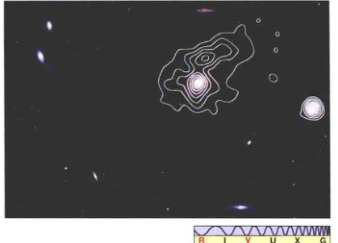
<div class="caption">
<strong>图2.24 核主导射电星系</strong><br/>
        这是一幅射电星系M86的射电信号等高线图，射电辐射来自明亮的中央核心，该核心被一个延伸的、不太强烈的射电晕所包围。这幅射电图叠加在该星系和一些邻近星系的光学图像上，之前的图2.14显示了这个区域的更大的视场。[哈佛-史密松天体物理中心 (CFA)]
    </div>
<p>喷流是所有类型的活动星系的一个相当普遍的结构。图2.26给出了超巨椭圆星系M87的几幅图像——这是室女星系团（见图2.14）中一个突出的成员。长时间曝光的图像 [见图2.26(a)] 显示了一个大而模糊的光球——一个看起来还算正常的E1型星系，直径大约为100 kpc。短时间曝光的图像 [见图2.26(b)]，只拍摄了星系明亮的中心区，揭示了一个长 (2 kpc) 而细的物质喷流，从星系中心以接近光速喷出。计算机增强的图像显示，这个喷流由一系列比较均匀的沿其长度方向间隔开的“斑点”组成，暗示这些物质是在爆发活动期间被喷出的。喷流也被成像在射电波段、红外波段 [见图2.26(c)] 和X射线波段。</p>

<div class="caption">
<strong>图2.25 射电星系</strong><br/>
        一个中央能量源产生高速物质喷流，喷流与星系际气体相互作用，形成射电瓣。这个星系在我们看来既可能有射电瓣，也可能是一个核主导射电星系，取决于我们与喷流和射电瓣的位置关系。
    </div>
<!-- Page 23 -->

<div class="caption">
<strong>互动图2.26 M87的喷流</strong><br/>
        超巨椭圆星系M87 (也叫室女座A) 以不同的放大倍数显示在这里。(a) 光学波段长曝光图像，显示了星系的晕和嵌入式中心区域。(b) 其核心在光学波段的短曝光图像，显示了一个有趣的物质喷流，尺度稍小。(c) M87喷流的红外图像，与图(b)相比分辨率更高。图(c)中左侧的亮点是该星系明亮的核心，中央附近的明亮斑点对应在图(b)中可见的喷流明亮的“结”。[美国国家光学天文台 (NOAO)、美国国家航空航天局 (NASA)]
    </div>
<div class="concept-check">
<h4>概念理解检查</h4>
<p><strong>✓ 活动星系核的能量释放并不像一个黑体曲线。为什么这很重要呢？</strong></p>
</div>
<h3>类星体</h3>
<p>在射电天文学的初期，许多射电源还没有找到在光学波段的对应天体。到1960年，<strong>第3剑桥射电源表</strong>中列出了几百个这样的射电源，天文学家扫视天空，寻找这些射电源的光学对应体。他们的工作是困难的，因为射电观测的分辨率低（这意味着观测者不知道观测的精确方位在哪里），而这些天体在可见光波段又很暗。</p>
<p>1960年，天文学家在射电源3C 48（第3剑桥射电源表中的第48个天体）的位置似乎探测到一颗暗淡的蓝色恒星，并拍摄了它的光谱。这个天体古怪的光谱含有许多未知的、不寻常的宽发射线，这在当时无法解释。3C 48是一个独特的奇怪天体，直到1962年，另一个类似的——也同样神秘的——暗淡的蓝色天体被发现，它也有着很奇怪的谱线，被确认是射电源3C 273 (见图2.27)。</p>
<p>接下来的一年有了突破，天文学家意识到，3C 273的谱线中最强的未知线其实就是熟悉的氢的谱线，只不过红移到了一个非常陌生的数值——红移幅度约16%，对应的退行速度达48,000 km/s！图2.28显示了3C 273的光谱。图上标出了一些明显的发射线和它们的红移程度。一旦这些奇怪的光谱被认了出来，天文学家很快就发现3C 48的光谱有类似的解释，而它的红移竟然高达37%！暗示它远离地球的速度达到惊人的近三分之一光速！</p>
<p>它们超高的速度意味着这两个天体都不是我们银河系的成员。事实上，它们的大红移表明它们其实位于很远的地方。应用哈勃定律（我们采用的哈勃常数值是H₀ = 70 km/(s · Mpc)），我们得到3C 273的距离为650 Mpc，3C 48的距离为1400 Mpc。（再看一下“详细说明2-1”，可以获得这些距离是如何确定的，以及这么大的红移意味着什么更多信息。）</p>
<p>然而，对不寻常光谱的这一解释造成了一个更大的神秘。使用平方反比定律进行一个简单的计算揭示出这样一个事实：尽管其光学外观不起眼（见图2.29），但这些暗淡的“星星”事实上是宇宙中已知最明亮的天体！例如，天体3C 273的光度大约为10<sup>40</sup> W，相当于20万亿倍太阳光度或1000倍银河系光度。更普遍的是，<strong>类星体</strong>的光度范围从大约10<sup>38</sup> W——约相当于最明亮的赛弗特星系——到高达近10<sup>40</sup> W（相当于明亮的射电星系的光度）。这个值比较典型。</p>
<!-- Page 24 -->

<div class="caption">
<strong>图2.27 类星体3C 273</strong><br/>
        (a) 明亮的类星体3C 273显示出发光的物质喷流，但是类星体的主体在外观上像一颗恒星。(b) 喷流延伸约30kpc，在这张高分辨率图像上可以看得更清楚。[美国大学天文联盟 (AURA)]
    </div>
<p>这些天体显然不是恒星（因为其巨大的光度），它们被称为<strong>类星的射电源</strong>（“类星的”意思是外观像恒星）或<strong>类星体</strong>。（这个名字现在仍然使用，尽管我们已经知道，不是所有的这种高红移、恒星样的天体都是强射电源。）目前已经发现超过200,000个类星体，随着大尺度的巡天将空间探测得越来越深，这个数字还在快速增加（见探索3-1）。最近的类星体距我们240 Mpc，最远的位于9000 Mpc之外。大多数类星体均位于距离地球超过1000 Mpc处。由于光速是有限的，所以这些遥远的天体代表了宇宙遥远的过去。言下之意是，大多数的类星体可以追溯到星系形成与演化的极早期，而不是更近的时期。这些充满活力的天体在很远的距离处普遍存在，告诉我们宇宙曾经是一个比今天“暴力”得多的地方。</p>
<p>类星体与赛弗特星系和射电星系有着许多共同的性质。它们的辐射是非星的，亮度可能会在以月、周、天，或者（在某些情况下）甚至小时为单位的时间里发生不规则变化。一些类星体显示出喷流和延伸的发射结构的证据。注意3C 273的发光物质喷流（见图2.27）——让人联想到M87中的喷流——从类星体的中心向外延伸近30 kpc。图2.30显示了一个有着射电瓣的类星体，其射电瓣与天鹅座A [见图2.23(b)] 中所看到的类似。类星体已经在电磁波谱的所有部分被观测到，虽然其能量的大部分发射集中在光学和红外波段。约10%~15%的类星体（被称为“射电强”的类星体）也在射电波段发射出大量能量，这可能是未知的喷流所致。</p>
<p>天文学家曾经基于活动星系和类星体的外观、光谱以及到我们的距离来区别它们。但今天，大多数天文学家认为，类星体其实只是遥远活动星系的活动强烈的明亮核心——这些星系过于遥远，以至星系本身无法被看到（图3.19展示了哈勃太空望远镜观测到的几个相对较近的类星体，周围的星系清晰可见。）</p>
<div class="concept-check">
<h4>科学过程理解检查</h4>
<p><strong>✓ 对类星体距离的测定如何改变了天文学家对这些天体的了解？</strong></p>
</div>
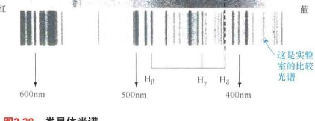
<div class="caption">
<strong>图2.28 类星体光谱</strong><br/>
        遥远的类星体3C 273的可见光光谱（这是一张负片，所以谱线实际上是发射线）。注意被标记为Hβ、Hγ、Hδ的三根谱线的红移和宽度。红移表明类星体的巨大距离。谱线的宽度意味着类星体中快速的内部运动。[改编自帕洛玛天文台 (Palomar Observatory)/加州理工学院 (Caltech)]
    </div>
<!-- Page 25 -->
<h2>2.5 活动星系的中央引擎</h2>

<div class="caption">
<strong>图2.29 典型的类星体</strong><br/>
        虽然类星体是宇宙中最明亮的天体，但它们在外观上往往给人印象不深。在这个光学图像中，一个遥远的类星体（箭头标记）看上去（在天空中）接近附近的正常恒星。类星体远得多的距离使它看起来比恒星暗，但本质上它比恒星亮得多。类星体通常在外观上像恒星，但可以通过其不同寻常的非星的颜色或光谱来确认。[斯隆数字化巡天 (SDSS)]
    </div>
<p>天文学家目前的共识是，尽管在外观和光度上有区别，但赛弗特星系、射电星系、类星体——以及“正常”的星系核——共享一个通用的能量生成机制。</p>
<p>作为一个种类，活动星系核有着以下部分或全部的性质：</p>
<ol>
<li>它们有着<strong>高光度</strong>，一般大于10<sup>37</sup> W——这是一个明亮的正常星系的典型特征。</li>
<li>它们的能量发射大多数是<strong>非星的</strong>——不能被解释为上万亿颗恒星辐射的组合。</li>
<li>它们的能量输出可以是<strong>高度可变的</strong>，这意味着它们的能源是从一个小的中央核心发出的——远小于1 pc。</li>
<li>它们可能会表现出<strong>喷流</strong>和其他爆炸活动的标志。</li>
<li>它们的可见光谱可能显示出<strong>致宽的发射线</strong>，说明产能在区有迅速的内部运动。</li>
<li>通常情况下，这些活动似乎与星系之间的<strong>相互作用</strong>有关。</li>
</ol>
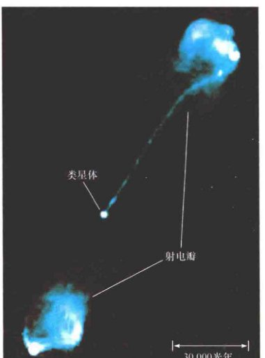
<div class="caption">
<strong>图2.30 类星体喷流</strong><br/>
        这是距我们大约3000Mpc的类星体3C 175的射电图像，显示了冲向射电瓣的射电喷流。射电瓣自身跨越了约100万光年——大小相当于前面讨论的射电星系（参见第33页的本章开篇图）。[美国国家射电天文台 (NRAO)]
    </div>
<p>那么，核心问题是，如此巨大的能量如何才能从这些相对较小的空间区域出现？为什么辐射是非热的？喷流和延伸的射电发射瓣的起源是什么？我们首先考虑能量是如何产生的，然后再讨论能量是如何被实际发射到星系际空间的。</p>
<h3>能量产生</h3>
<p>如图2.31所示，活动星系中央引擎的领先模型是银河系中驱动X射线双星和银河系核心活动的过程——一个超大质量黑洞吸积气体，物质在掉落到中央黑洞的过程中释放出巨大的能量——的放大版。<a class="xref" href="#">∞ (1.7节)</a> 为了驱动最明亮的活动星系，理论表明，对应的黑洞必须比太阳的质量大数十亿倍。</p>
<!-- Page 26 -->

<div class="caption">
<strong>图2.31 活动星系核</strong><br/>
        关于活动星系核能源的领先理论认为，这些天体是由物质被吸积到一个超大质量的黑洞上所驱动的。物质呈螺旋状流向黑洞，被加热，产生巨大的能量。同时，气体的高速喷流可垂直于吸积盘喷射出去，形成在许多活动星系中观测到的喷流和瓣。带电物质运动驱动了星系盘中的磁场。磁场被喷流带进射电瓣，在那里，它们对产生可被探测到的辐射起着至关重要的作用。
    </div>
<p>质量-能量的10%或20%会被辐射出去。由于一颗类太阳恒星的总质量-能量——质量乘以光速的平方——大约是2 × 10<sup>47</sup> J，因此可以得出结论，要想支撑一个明亮的活动星系10<sup>38</sup> W的亮度，“只需要”一个10亿倍太阳质量的黑洞每10年消耗1个太阳质量的气体就能提供。活动星系光度的大小，对应于所需要燃料的多少。因此，要想驱动一个10<sup>40</sup> W的类星体——比前面的例子亮100倍——黑洞只需要简单地消耗多出100倍的燃料，或每年消耗10颗恒星。10<sup>46</sup> W的赛弗特星系的中央黑洞每千年只需要吞噬1个太阳质量的物质。</p>
<p>发射区的小尺寸是致密中央黑洞的直接后果。即使是10亿倍太阳质量的黑洞的半径也只有3 × 10<sup>9</sup> km或10<sup>-4</sup> pc——约20 AU。理论表明，产生了大部分辐射的吸积盘的直径远小于1 pc。吸积盘中的不稳定性可能会导致释放出的能量产生波动，从而导致在许多天体中观测到的变化。在许多活动星系的核心中看到的谱线展宽，可能产生于气体在黑洞强大引力下的快速轨道运动。</p>
<p>如同之前介绍过的尺度较小的类似模式，下落的气体形成一个<strong>吸积盘</strong>，螺旋向下落入黑洞，被盘内的摩擦加热到很高的温度，结果释放出巨量的辐射。然而，在活动星系的情况下，吸积气体不是来自一颗伴星——比如在恒星世界的X射线源的情况——而是来自所有的恒星和星际气体云，它们最有可能是因为与另一个星系的偶遇——该星系离黑洞太近而被其强大引力撕碎——而被转入星系中心。</p>
<p>吸积过程可以非常有效地把减少的质量（以气体的形式）转换成能量（以电磁辐射的形式）。详细的计算表明，下落物质在穿过黑洞的事件视界而永远消失之前，有高达总喷流似乎是吸积流的普遍结构，有大有小。图2.31所示的喷流是由从吸积盘内部区域炸向空间——并完全脱离了星系的可见部分——的物质（主要是电子和质子）组成的。它们最有可能由吸积盘本身产生的强磁场形成。这些磁场加速带电粒子到接近光速，并以平行于吸积盘自转轴的方向将它们喷射出去。图2.32展示了一幅哈勃太空望远镜拍摄的图像：一个气体和尘埃盘位于室女星系团中射电星系NGC 4261的核心。符合刚才描述的模型——与盘面垂直的巨大喷流从该星系的中心发出。</p>
<!-- Page 27 -->
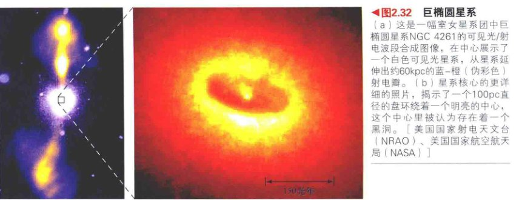
<div class="caption">
<strong>图2.32 巨椭圆星系</strong><br/>
        (a) 这是一幅室女星系团中巨椭圆星系NGC 4261的可见光/射电波段合成图像，在中心展示了一个白色可见光星系，从星系延伸出约60kpc的蓝-橙（伪彩色）射电瓣。(b) 星系核心的更详细的照片，揭示了一个100pc直径的盘环绕着一个明亮的中心，这个中心里被认为存在着一个黑洞。[美国国家射电天文台 (NRAO)、美国国家航空航天局 (NASA)]
    </div>
<p>图2.33显示了支持该模型的进一步证据——以M87中心的成像和光谱数据的形式，暗示了一个快速旋转的物质盘围绕星系中心运动，并与喷流垂直。针对盘对面的气体速度的测量表明，在中心几秒差距范围内的质量约为3 × 10<sup>9</sup>倍太阳质量。我们可以假设这是中央黑洞的质量。在M87的距离上，HST的0.05"的角分辨率对应的尺度大约为5 pc，所以我们还远远没有看到（太阳系大小的）中心黑洞本身，但是改进后的“间接”证据已经使许多天文学家确信了该理论基本正确。</p>
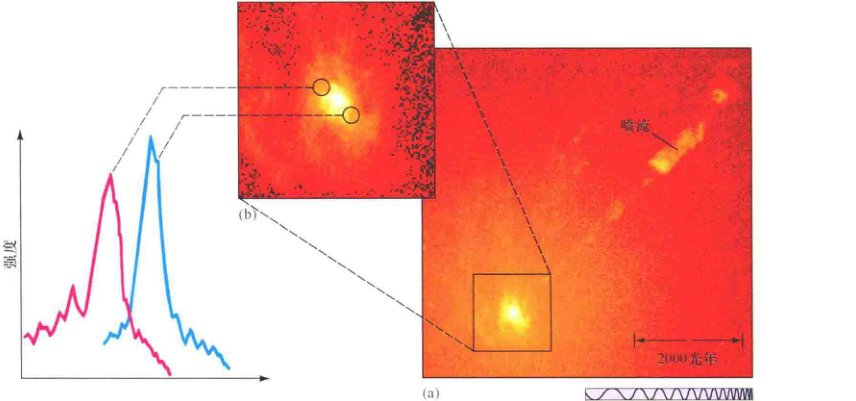
<div class="caption">
<strong>图2.33 M87的盘</strong><br/>
        M87的照片和光谱支持在这个星系的心脏有一个快速旋转的吸积盘的想法。(a) M87的中央区域，类似于图2.26(c)所示，显示了星系明亮的核心和喷流。(b) 核心的局部放大图，揭示了一堆旋涡状的恒星、气体和尘埃。(c) 在核心对面观测到的光谱线结构展示了形成对比的红色和蓝色的多普勒频移，这意味着一侧的物质朝我们运动，另一侧的物质则逐渐远离。很显然，一个吸积盘在垂直于喷流旋转，在它的中心是一个具有约30亿倍太阳质量的黑洞。[美国国家航空航天局 (NASA)]
    </div>
<!-- Page 28 -->
<h3>能量发射</h3>
<p>理论表明，围绕一个超大质量黑洞的吸积盘的辐射应该跨越广阔的波长范围，从红外到X射线，对应于在吸积盘中被加热的气体的广阔温度范围。这造成了观测到的一部分活动星系核的光谱。然而，在许多情况下，从吸积盘发出的高能辐射会被核心外面的物质“再加工”——就是说，被吸收、然后以较长的波长再发射——然后才到达我们的探测器。</p>

<div class="caption">
<strong>图2.34 尘埃“甜甜圈”</strong><br/>
        围绕一个大质量黑洞的吸积盘，由许多不同温度的热气体（最靠近中心的最热）组成——在这里进行了一些艺术想象。当从上面或下面看时，吸积盘辐射出很宽的电磁波谱，能量一直延伸到X射线区域。然而，最终驱动了整个系统的混杂着尘埃的下落气体，被认为在吸积盘之外形成了一个丰满的、甜甜圈状的区域（这里以红色显示），从而有效地吸收了大部分到达它的高能辐射，并主要以较冷的红外辐射的形式将其重新发射。因此，当我们从侧面看吸积盘时，能观测到强大的红外发射。（与图2.25进行比较。）[改编自D. 贝里 (D. Berry)]
    </div>
<p>研究人员认为，最有可能的再加工位置是一个围绕着中央产能吸积盘的、相当丰满的、甜甜圈状的气体和尘埃环。如图2.34所示，如果我们投向黑洞的视线不与这个尘埃的“甜甜圈”十字相交，我们就能看到“裸”的能量源发射出大量的高能辐射（有着宽的发射线、因为我们可以在黑洞附近看到快速移动的气体）。如果我们的视线被“甜甜圈”遮挡，我们就会看到大量的被尘埃再辐射的红外辐射（只有窄的发射线，来自远离中心的气体）。“甜甜圈”本身的结构具有不确定性，并可能在事实上与图中这个看起来相当普通的环没有什么相似之处。许多天文学家怀疑，吸收区域实际上可能是一个气体的致密外向流，在吸积盘的外侧边缘被内部的强辐射驱动。</p>
<p>一个不同的再加工机制运作在许多喷流和射电瓣上，该机制涉及可能产生在吸积盘内并由喷流带到星系际空间的磁场（见图2.31）。正如图2.35(a)所描绘的，任何时候，一个带电粒子（在这里为电子）遇到磁场，粒子会趋向于沿磁场线做螺旋运动。在讨论地球磁层和太阳活动时，我们已经遇到了这样的想法。</p>
<p>随着粒子的螺旋运动，它们发射电磁辐射。这样产生的辐射，叫作<strong>同步加速辐射</strong>，以首次观测到这种辐射的加速器命名。这种辐射实质上是<strong>非热的</strong>，这意味着辐射和辐射天体的温度之间没有联系。因此，辐射不能被描述为黑体曲线。相反，它的强度随着频率的增加而减小，如图2.35(b)所示。这恰好可以解释射电星系和射电类星体辐射的全部光谱。从活动星系核的喷流和射电瓣接收到的辐射的观测结果与同步加速辐射完全一致。</p>
<!-- Page 29 -->

<div class="caption">
<strong>图2.35 非热辐射</strong><br/>
        (a) 带电粒子，特别是快速移动的电子（红色），在磁场中（黑色）螺旋运动时，发射出同步加速辐射（蓝色）。这个过程并不限于发生在活动星系，也发生在较小的尺度上——当带电粒子与地球的范艾伦带相互作用时，当带电粒子在太阳黑子上弯成拱形时，以及在中子星附近时，还有在我们自己的银河系中心。<a class="xref" href="#">∞ (1.7节)</a><br/>
        (b) 热辐射和同步加速（非热）辐射的频率有不同的变化。热辐射由曲线描述，峰值频率依赖于辐射源的温度。相比之下，非热的同步加速辐射在低频更加强烈，与辐射源的温度无关。（与图2.19进行比较。）
    </div>
<p>最终，喷流被星系际介质减速和停止，定向流变成湍流，磁场也变得纠结。其结果是一个巨大的射电瓣，以同步加速辐射的形式发射几乎所有的能量。因此，即使射电发射来自一个令可见光星系也相形见绌的巨大的、扩展的空间，其能量的来源仍是位于星系中心的吸积盘——体积比射电瓣小100亿亿倍。喷流只不过是一个导管，从核心向外运输能量。能量被驱动进入射电瓣，在那里，它被最终辐射进太空。</p>
<p>半人马A的内瓣和M87喷流中的斑点的存在，意味着喷流的形成可能是一个间歇的过程（或如同之前在赛弗特星系中讨论的情况，也许根本没有发生）。正如我们看到的，也有证据表明，许多——即使不是全部——在邻近的活动星系中观测到的活动是由与“邻居”的相互作用而引起的。许多邻近的活动星系（例如，半人马A）似乎已经“深陷”于与另一个星系的相互作用中，暗示燃料的供应可以由一个“同伴”提供。潮汐力将气体和恒星转移到星系核，并触发可能会持续数百万年的爆发。</p>
<p>活动星系在活跃的爆发之间是什么样子的？我们看到的正常星系和它们之间存在什么其他的联系？要回答这些重要的问题，我们必须更深入地研讨星系演化这个主题，这是我们在第3章中要开启的。</p>
<div class="concept-check">
<h4>概念理解检查</h4>
<p><strong>✓ 一个超大质量黑洞的吸积如何驱动来自射电星系的扩展射电瓣的能量发射？</strong></p>
</div>
<!-- Page 30 -->
<aside class="sidebar">
<h4>终极问题</h4>
<p>星系研究落后于恒星研究近50年。这是因为星系直到20世纪才被发现，我们仍然在学习它们。它们怎样形成，它们如何演化？这些都是关于星系的重要问题。而在积累了更多更好的数据——特别是关于最遥远星系的数据——之前，这些问题无法回答。随着比以往规模大得多的地基星系巡天的进行，一些有助于解决这些重要问题的重大突破可能即将到来。</p>
</aside>
<section class="chapter-review">
<h2>章节回顾</h2>
<h3>小结</h3>
<ol>
<li>
<strong>哈勃分类法</strong> (p.36) 根据外观将星系划分成若干类型。<strong>旋涡星系</strong> (p.36) 有扁平的星系盘、中央核球和旋臂。它们的晕由老年恒星组成，而气体丰富的星系盘中则正在进行着恒星形成。<strong>棒旋星系</strong> (p.37) 包含一个从中央核球伸出的延展的“棒状结构”。<strong>椭圆星系</strong> (p.38) 没有星系盘，冷气体或尘埃的含量很少或根本没有，虽然能观测到非常热的星际气体。在大多数情况下，它们完全由老年恒星组成。它们的范围是从比银河系质量小得多的矮椭圆星系，到可能包含数万亿颗恒星的巨椭圆星系。<strong>S0和SB0型星系</strong> (p.39) 的性质介于椭圆星系和旋涡星系之间。<strong>不规则星系</strong> (p.40) 是不属于其他任何类别的星系，许多都含有丰富的气体和尘埃，是恒星形成旺盛的地方。
            </li>
<li>
                天文学家通常使用<strong>标准烛光</strong> (p.43) 作为测量距离的工具。这些是很容易识别的天体，其光度在一个适当的、可以被很好定义的范围内。将它们的光度和表观亮度进行比较，天文学家用平方反比律确定其距离。另一种方法是<strong>塔利-费舍尔关系</strong> (p.44)，这是旋涡星系的旋转速度和光度之间的经验关系。
            </li>
<li>
                银河系、仙女星系和其他一些较小的星系形成一个小的引力束缚的星系集合，叫作<strong>本星系群</strong> (p.46)。<strong>星系团</strong> (p.46) 由许多互相绕转的星系组成，并被它们自身的引力束缚在一起。距本星系群最近的大星系团是室女星系团。
            </li>
<li>
                遥远的星系被观测到正在远离银河系、远离的速度与到我们的距离成正比。这个关系被称为<strong>哈勃定律</strong> (p.48)。这个定律里的比例常数叫<strong>哈勃常数</strong> (p.48)。它的值被认为大约是70 km/(s · Mpc)。天文学家利用哈勃定律来确定宇宙中最遥远天体的距离。与哈勃膨胀相关的红移被称为<strong>宇宙学红移</strong> (p.48)。
            </li>
<li>
<strong>活动星系</strong> (p.50) 可以比正常星系的光度大得多，有着非星光谱，在电磁波谱的可见光波段之外发射其大部分能量。通常，非星活动表明其内部的快速运动，并伴有明亮的<strong>活动星系核</strong> (p.51)。许多活动星系具有高速、狭窄的物质喷流，从它们的中央核心喷射而出。喷流从核心（产能处）运输能量到巨大的<strong>射电瓣</strong> (p.53)，射电瓣的位置远远超过星系的可见部分，能量在那里被辐射向太空。喷流经常会看起来由显著的气体“斑点”组成，这表明能量产生的过程是间歇性的。
            </li>
<li>
<strong>赛弗特星系</strong> (p.52) 看起来像正常的旋涡星系，但有极亮的中央星系核。赛弗特星系核的谱线非常宽，意味着其快速的内部运动。赛弗特星系的快速光变意味着辐射源远小于1光年。<strong>射电星系</strong> (p.53) 在射电波段辐射出大量的能量，对应的可见光星系通常是椭圆星系。<strong>类星体</strong> (p.57) 或称“类似恒星的天体”，是已知最明亮的天体。在可见光波段，它们呈现出恒星的样子，它们的光谱通常有大幅度的红移。所有的类星体都是非常遥远的，表明我们看到的是它们在遥远的过去的样子。
            </li>
<li>
                对所有活动星系观测到的性质的最普遍的解释是，它们的能量由一个位于星系中心的超大质量（数百万倍到数十亿倍太阳质量）黑洞对星系气体的吸积产生。吸积盘的小尺寸解释了发射区的紧凑程度，而在黑洞强大的引力下围绕其高速运动的气体导致了观测到的快速运动。典型的活动星系的光度需要每隔几年时间消耗约1太阳质量的物质。一些下落的物质可能被炸开进入太空，产生被磁化的喷流，创建并“滋养”了星系的射电瓣。吸积盘在广泛的温度范围内发射，产生了非星光谱。此外，大部分辐射可能被围绕吸积盘的一个环再加工成了红外辐射。在更大的尺度上，在磁场线中做螺旋运动的带电粒子产生了<strong>同步加速辐射</strong> (p.61)，其谱线与射电星系和喷流的射电发射一致。
            </li>
</ol>
</section>
<!-- Page 31 & 32 -->
<section class="exercises">
<h2>复习与讨论</h2>
<ol class="question-list">
<li><strong>LO1</strong> 如何区别不同的旋涡星系？</li>
<li>描述椭圆星系和银河系晕的一些异同。</li>
<li><strong>LO2</strong> 描述在距离测量阶梯中，可以用于确定一个距我们 5 Mpc 的星系的四个梯级。</li>
<li><strong>LO3</strong> 描述本星系群的成员。与整个银河系的体积相比，它占据了多大的空间？</li>
<li>什么是室女星系团？</li>
<li>什么是标准烛光？为什么它对天文学很重要？</li>
<li>如何使用塔利-费舍尔关系来测量星系的距离？</li>
<li><strong>LO4 POS</strong> 什么是哈勃定律？天文学家如何使用它来测量星系的距离？</li>
<li>哈勃常数数值的最可能的范围是什么？这个值的不确定度是多少？</li>
<li><strong>LO5</strong> 说出正常星系和活动星系的两个基本区别。</li>
<li><strong>POS</strong> 一些活动星系的射电瓣是由从星系中心喷射出来的物质组成的证据是什么？</li>
<li><strong>LO6 POS</strong> 我们如何知道许多活动星系的能量发射区一定非常小？</li>
<li>类星体的光谱有哪些意想不到和令人吃惊的地方？</li>
<li>我们如何知道类星体是极端明亮的？</li>
<li><strong>LO7</strong> 简要描述活动星系中央引擎的领先模型。</li>
</ol>
<h2>概念自测：选择题</h2>
<ol class="question-list">
<li>星系盘中的年轻恒星：(a) 均匀分布在旋臂中和旋臂之间； (b) 主要分布在旋臂之间的空间； (c) 主要分布在旋臂中； (d) 年龄大于晕中的恒星。</li>
<li>天文学家通过什么来分类椭圆星系？ (a) 它们包含的恒星数量； (b) 它们的颜色； (c) 它们看起来的扁平程度； (d) 它们的直径。</li>
<li>使用标准烛光的方法，原则上我们可以测量一个篝火的距离，如果我们知道了： (a) 使用木材的数量； (b) 火焰的温度； (c) 火焰燃烧时间的长短； (d) 用于燃烧的木材类型。</li>
<li><strong>VIS</strong> 如果图2.11（“星系自转”）中的星系更小，旋转速度更慢，那么，为了正确表现它，这个图应该被重绘以显示： (a) 更大的蓝移； (b) 更大的红移； (c) 更窄的组合线； (d) 更大的组合振幅。</li>
<li>在距太阳 30 Mpc 的范围内，有大约： (a) 3个星系； (b) 30个星系； (c) 数千个星系； (d) 数百万个星系。</li>
<li><strong>VIS</strong> 根据图2.17（“哈勃定律”），一个距离为5亿 pc 的星系的速度大约为： (a) 25,000 km/s，远离我们； (b) 35,000 km/s，靠近我们； (c) 35,000 km/s，远离我们； (d) 75,000 km/s，靠近我们。</li>
<li><strong>VIS</strong> 根据图2.19（“星系能量光谱”），活动星系： (a) 在长波发出大部分能量； (b) 在高频发射很少的能量； (c) 在所有波长放出大量的能量； (d) 在可见光波段发射其大部分能量。</li>
<li>如果一个星系的亮度波动非常迅速，产生辐射的区域必然： (a) 非常大； (b) 非常小； (c) 非常热； (d) 旋转非常迅速。</li>
<li>类星体光谱： (a) 具有很强的红移； (b) 没有谱线； (c) 看起来像恒星的光谱； (d) 包含来自未知元素的发射线。</li>
<li>活动星系非常明亮，因为它们： (a) 很热； (b) 在它们的核心包含黑洞； (c) 被热气体所包围； (d) 发出喷流。</li>
</ol>
<h2>问答</h2>
<ol class="question-list">
<li>一个光度为十亿倍太阳光度的超新星被作为标准烛光来测量遥远星系的距离。在地球上看，如果把这颗超新星放在10 kpc的地方，其亮度和太阳一样。那么这个星系的距离是多少？</li>
<li>室女星系团的一颗造父变星的绝对星等为-5等，观测到的视星等为26.3等。利用这些数字来计算室女星系团的距离。</li>
<li>根据哈勃定律，取 H₀ = 70 km/(s · Mpc)。一个距离为200 Mpc的星系的退行速度是多少？一个退行速度为4000 km/s的星系的距离是多少？如果取 H₀ = 60 km/(s · Mpc)，这些问题的答案将如何变化？如果取 H₀ = 80 km/(s · Mpc)呢？</li>
<li>根据哈勃定律，取 H₀ = 70 km/(s · Mpc)，银河系到室女星系团的距离增加一倍的话，需要多长时间？</li>
<li>使用表2.2中的数据来估计一个红移为5、视星等为22等的类星体的绝对星等和光度。</li>
<li>某类星体具有0.25的红移和13等的视星等，使用表2.2中的数据，计算该类星体的绝对星等和它的光度。比较该类星体在10 pc处的视亮度和从地球上看太阳的视亮度。</li>
<li>一个赛弗特星系的谱线被观测到有0.5%的红移，其展宽的发射线表明，在距其中心角距离为0.1"的地方有250 km/s的旋转速度。假设此旋转为圆形轨道，利用开普勒定律估计这0.1"半径范围内的质量。<a class="xref" href="#">∞ (1.6节)</a></li>
<li>一个类星体每年消耗1太阳质量的物质，将它们的15%直接转化成能量。那么该类星体的光度是多少？以太阳光度为单位。</li>
</ol>
<h2>实践活动</h2>
<p><strong>协作项目</strong><br/>
        观测室女星系团。一个口径8in（约203mm）的望远镜是进行此项目最佳大小的望远镜。室女座在春季夜晚适合观测。要找到该星系团，首先找到狮子座。狮子座的东面部分有3颗星——狮子座β（五帝座一）、狮子座θ和狮子座δ，它们组成一个醒目的三角形。连接狮子座θ和五帝座一，向东延长出去一倍远，你就会大概来到室女星系团的中心。寻找以下梅西叶天体，它们是这个星系团中最亮的星系：M49、M58、M59、M60、M84、M86、M87、M89和M90。仔细观察每个星系的不同特点，有些有非常明亮的核。将你所看到的画下来或拍照，然后构建你自己的关于室女星系团最亮星系的图片目录。</p>
<p><strong>个人项目</strong><br/>
        类星体3C 273是最近和最亮的一个，但是这并不意味着它能很容易被找到！它的坐标为赤经 = 12h29.2min，赤纬 = +2°03'。它位于室女星系团的南部位置，但并不属于该星系团。它的亮度在12~13等（亮度是变化的），可能需要10in或12in（约254mm或304mm）的望远镜才能看到，但你可以首先用一个8in的镜子尝试。它应该会呈现出一个非常暗弱的恒星的样子。看到这个天体的意义在于，它的距离是640 Mpc。您所看到的光已经离开了这个天体超过20亿年！这是用小型望远镜可以观测的最遥远的天体。</p>
</section>
</article>